import pandas as pd
import numpy as np
import matplotlib.pyplot as plt
import scipy.stats as st
from statsmodels.stats.weightstats import ztestCapítulo 6. Exploración de Datos con Inferencia Estadística
II. Preparación y Análisis de Datos
¡Felicidades! Has concluido la primera etapa de tu formación en el área de análisis y ciencia de datos. Este recorrido inicial te ha permitido construir una base sólida sobre la cual podrás desarrollar habilidades analíticas, estadísticas y computacionales cada vez más avanzadas. Aunque el camino del aprendizaje en datos es amplio y evoluciona constantemente, los conocimientos adquiridos hasta este punto representan los fundamentos esenciales que utilizan analistas y científicos de datos en proyectos reales dentro de empresas, organizaciones e investigación aplicada.
A lo largo de los diferentes ejercicios y casos de estudio, has comenzado a comprender que trabajar con datos no consiste únicamente en programar o generar gráficos, sino en desarrollar la capacidad de interpretar problemas, estructurar soluciones y transformar información en conocimiento útil para la toma de decisiones. Las herramientas tecnológicas son importantes, pero el verdadero valor del análisis proviene de la combinación entre pensamiento crítico, comprensión del contexto y capacidad de interpretación.
Hasta este momento, has fortalecido distintas competencias fundamentales:
- Fundamentos de programación con Python: ahora conoces los principios básicos de programación utilizando Python, incluyendo estructuras de control, funciones, manejo de datos y organización lógica de código. Es importante recordar que la programación no constituye el objetivo final de la ciencia de datos, sino una herramienta que permite automatizar procesos, manipular información y construir soluciones analíticas. El valor real no está únicamente en escribir código, sino en utilizarlo para resolver problemas de manera eficiente y estructurada.
- Comprensión del contexto y entendimiento de los datos: has aprendido que ningún análisis puede desarrollarse correctamente sin comprender primero el problema que se desea resolver y la naturaleza de los datos disponibles. Los datos, por sí solos, carecen de significado si no se interpretan dentro de un contexto específico. Por ello, parte fundamental del trabajo analítico consiste en formular preguntas adecuadas, identificar limitaciones de la información y reconocer qué indicadores son realmente relevantes para apoyar procesos de decisión. Aunque muchas tareas técnicas pueden automatizarse, el criterio analítico y la interpretación humana continúan siendo elementos irremplazables.
- Manipulación y organización de datos tabulares: mediante herramientas como Pandas, has desarrollado la capacidad de trabajar con datos estructurados en formato tabular, realizando tareas de limpieza, transformación, filtrado y organización de información. Gran parte de los datos utilizados en entornos empresariales, financieros, científicos y tecnológicos se presentan bajo este tipo de estructura. Incluso cuando la información proviene de fuentes no estructuradas —como texto, imágenes o registros web—, frecuentemente se aplican procesos para convertirla en tablas que faciliten su análisis posterior.
- Análisis exploratorio de datos (EDA): adicionalmente, ya eres capaz de desarrollar un análisis exploratorio básico utilizando herramientas estadísticas y visuales. Has comprendido que explorar datos implica estudiar el comportamiento de variables e indicadores relevantes mediante estadística descriptiva, inferencia y visualización. A través de gráficos y métricas, es posible identificar patrones, tendencias, relaciones y anomalías que permiten generar conclusiones de valor. Esta etapa representa uno de los procesos más importantes dentro de cualquier proyecto analítico, ya que proporciona el entendimiento necesario para orientar análisis posteriores o construir modelos predictivos más complejos.
Todos estos conocimientos constituyen la base metodológica y técnica sobre la cual se construyen áreas más avanzadas como aprendizaje automático, inteligencia artificial, analítica predictiva, optimización y modelado estadístico. Más importante aún, te permiten comenzar a desarrollar una mentalidad analítica orientada a la resolución de problemas reales mediante el uso estratégico de los datos.
En este nuevo caso de estudio tendrás la oportunidad de repasar, integrar y fortalecer todos estos conceptos de manera conjunta. El objetivo será aplicar nuevamente tus habilidades de programación, manipulación de datos, análisis estadístico y visualización dentro de un contexto específico, enfrentándote a situaciones similares a las que suelen aparecer en proyectos reales de análisis de datos. Adicionalmente, incorporaremos los principios y técnicas de inferencia estadística, la cual nos permitirá generar conclusiones más robustas y adecuadas, y de este modo, ser capaces de desarrollar proyectos de análisis de datos completos y consistentes.
Entendimiento del contexto
La industria de los videojuegos se ha consolidado como uno de los sectores de entretenimiento más grandes y dinámicos del mundo, superando en ingresos a industrias tradicionales como el cine y la música. Su crecimiento se debe a la combinación de avances tecnológicos —realidad virtual, inteligencia artificial, gráficos de alta fidelidad— y la diversificación de plataformas, desde consolas y PC hasta dispositivos móviles y servicios de cloud gaming. Este ecosistema no solo atrae a jugadores de todas las edades y regiones, sino también a empresas que encuentran en los videojuegos una oportunidad para innovar en experiencias interactivas y modelos de negocio.
La dinámica del sector está altamente influenciada por los scores de la crítica especializada y de los usuarios, ya que las reseñas y valoraciones pueden impactar directamente en las ventas y en la percepción de marca de los desarrolladores y distribuidores. A su vez, los ratings por edad y contenido (como los de la ESRB o PEGI) también juegan un rol importante en la segmentación de jugadores y en la aceptación de los títulos en diferentes regiones. Así, los videojuegos no solo representan un producto cultural y de entretenimiento, sino un campo fértil para el desarrollo de empresas de capitales millonarios.
Has sido contratado por un distribuidor minorista de videojuegos a nivel mundial, y tu primer trabajo consiste en generar un estudio para identificar los patrones asociados al éxito de un videojuego. Este informe será un insumo fundamental para que la empresa detecte proyectos prometedores, y planifique campañas publicitarias enfocadas en personalizar experiencias de jugadores y maximizar ingresos. De manera más específica, el cliente te ha pedido que des respuesta a las siguientes cuestiones:
- ¿Cómo se han comportado las ventas y la cantidad de juegos a través de los años?
- ¿Cómo se han comportado estos indicadores en los distintos tipos de plataformas?
- ¿Existen diferencias significativas en el promedio de ventas anuales entre los principales competidores a nivel de plataforma?
- Para el caso del principal competidor a nivel de plataformas, ¿existe alguna relación entre los scores y las ventas de cada juego?
- Para el caso del principal competidor a nivel de plataformas, ¿qué géneros y ratings de videojuegos mantienen una mayor calificación?
- ¿Cómo es la preferencia de géneros de videojuegos en las distintas zonas geográficas?
Entendimiento de los datos
Carga las librerías con las que se trabajará en este caso. Incluye entre ellas al módulo stats de Scipy y la función ztest del módulo stats.weightstats de la librería Statsmodels. Ambas librerías contienen diversas funciones para la realización de inferencia estadística.
La empresa ha compartido contigo el archivo games.csv que deberás cargar a continuación y mirar su estructura.
# Cargar datos
df_games = pd.read_csv("https://raw.githubusercontent.com/jsaraujo5081/material_curso_data_science/refs/heads/main/datasets/games.csv")
# Mirar la estructura de los datos
df_games.info()<class 'pandas.core.frame.DataFrame'>
RangeIndex: 16715 entries, 0 to 16714
Data columns (total 11 columns):
# Column Non-Null Count Dtype
--- ------ -------------- -----
0 Name 16713 non-null object
1 Platform 16715 non-null object
2 Year_of_Release 16446 non-null float64
3 Genre 16713 non-null object
4 NA_sales 16715 non-null float64
5 EU_sales 16715 non-null float64
6 JP_sales 16715 non-null float64
7 Other_sales 16715 non-null float64
8 Critic_Score 8137 non-null float64
9 User_Score 10014 non-null object
10 Rating 9949 non-null object
dtypes: float64(6), object(5)
memory usage: 1.4+ MBEste dataset presenta información sobre ventas, scores y rating de videojuegos que ha comercializado la empresa desde 1980 hasta 2016. Cuenta con poco menos de 17 mil registros y 11 columnas descritas a continuación:
| Columna | Descripción |
|---|---|
| Name | Nombre oficial del videojuego vendido. |
| Platform | Consola en la que salió el videojuego. |
| Year_of_Release | Año de lanzamiento del videojuego al mercado. |
| Genre | Género del videojuego. |
| NA_sales | Ventas en cientos de USD en Norteamérica. |
| EU_sales | Ventas en cientos de USD en Europa. |
| JP_sales | Ventas en cientos de USD en Japón. |
| Other_sales | Ventas en cientos de USD en el resto del mundo. |
| Critic_Score | Calificación promedio entre 0 y 100 dada por la crítica especializada. |
| User_Score | Calificación promedio entre 0 y 10 dada por los jugadores. |
| Rating | Clasificación de contenido recomendado por la ESRB. |
Visto esto, realiza un diagnóstico completo de los datos y genera un plan de acción para su preparación.
# Generar una muestra de los datos (random_state permite que la muestra sea reproducible)
df_games.sample(10, random_state = 123)| Name | Platform | Year_of_Release | Genre | NA_sales | EU_sales | JP_sales | Other_sales | Critic_Score | User_Score | Rating | |
|---|---|---|---|---|---|---|---|---|---|---|---|
| 7255 | NBA 06 | PSP | 2005.0 | Sports | 0.20 | 0.00 | 0.00 | 0.02 | 72.0 | 5.4 | E |
| 7039 | Me & My Katamari | PSP | 2005.0 | Puzzle | 0.13 | 0.01 | 0.08 | 0.00 | NaN | NaN | NaN |
| 3765 | Blitz: The League | XB | 2004.0 | Sports | 0.40 | 0.11 | 0.00 | 0.02 | 78.0 | 7.7 | M |
| 4665 | Sega Rally Championship 2 | DC | 1999.0 | Racing | 0.00 | 0.00 | 0.41 | 0.00 | NaN | NaN | NaN |
| 6810 | Homefront | PC | 2011.0 | Shooter | 0.11 | 0.10 | 0.00 | 0.03 | 70.0 | 5.5 | M |
| 7194 | MotoGP 09/10 | PS3 | 2010.0 | Racing | 0.05 | 0.13 | 0.00 | 0.04 | 70.0 | 5.4 | E |
| 14101 | Ultimate Game Room | DS | 2009.0 | Misc | 0.03 | 0.00 | 0.00 | 0.00 | NaN | tbd | E |
| 12190 | everGirl | GBA | 2005.0 | Adventure | 0.05 | 0.02 | 0.00 | 0.00 | NaN | NaN | NaN |
| 14267 | Medabots 9: Metabee / Rokusho | 3DS | 2015.0 | Role-Playing | 0.00 | 0.00 | 0.03 | 0.00 | NaN | NaN | NaN |
| 1185 | Mario Party 7 | GC | 2005.0 | Misc | 0.95 | 0.11 | 0.46 | 0.04 | 64.0 | 7.9 | E |
# Mirar plataformas existentes
df_games["Platform"].value_counts().sort_index()Platform
2600 133
3DO 3
3DS 520
DC 52
DS 2151
GB 98
GBA 822
GC 556
GEN 29
GG 1
N64 319
NES 98
NG 12
PC 974
PCFX 1
PS 1197
PS2 2161
PS3 1331
PS4 392
PSP 1209
PSV 430
SAT 173
SCD 6
SNES 239
TG16 2
WS 6
Wii 1320
WiiU 147
X360 1262
XB 824
XOne 247
Name: count, dtype: int64# Mirar los géneros existentes
df_games["Genre"].value_counts().sort_index()Genre
Action 3369
Adventure 1303
Fighting 849
Misc 1750
Platform 888
Puzzle 580
Racing 1249
Role-Playing 1498
Shooter 1323
Simulation 873
Sports 2348
Strategy 683
Name: count, dtype: int64# Generar un resumen estadístico de las columnas de venta
df_games[["NA_sales", "EU_sales", "JP_sales", "Other_sales"]].describe().round(2)| NA_sales | EU_sales | JP_sales | Other_sales | |
|---|---|---|---|---|
| count | 16715.00 | 16715.00 | 16715.00 | 16715.00 |
| mean | 0.26 | 0.15 | 0.08 | 0.05 |
| std | 0.81 | 0.50 | 0.31 | 0.19 |
| min | 0.00 | 0.00 | 0.00 | 0.00 |
| 25% | 0.00 | 0.00 | 0.00 | 0.00 |
| 50% | 0.08 | 0.02 | 0.00 | 0.01 |
| 75% | 0.24 | 0.11 | 0.04 | 0.03 |
| max | 41.36 | 28.96 | 10.22 | 10.57 |
# Generar un resumen estadístico del score de críticos
df_games["Critic_Score"].describe().round(2)count 8137.00
mean 68.97
std 13.94
min 13.00
25% 60.00
50% 71.00
75% 79.00
max 98.00
Name: Critic_Score, dtype: float64# Mirar los posibles scores de usuarios dado que es de tipo string
df_games["User_Score"].unique()array(['8', nan, '8.3', '8.5', '6.6', '8.4', '8.6', '7.7', '6.3', '7.4',
'8.2', '9', '7.9', '8.1', '8.7', '7.1', '3.4', '5.3', '4.8', '3.2',
'8.9', '6.4', '7.8', '7.5', '2.6', '7.2', '9.2', '7', '7.3', '4.3',
'7.6', '5.7', '5', '9.1', '6.5', 'tbd', '8.8', '6.9', '9.4', '6.8',
'6.1', '6.7', '5.4', '4', '4.9', '4.5', '9.3', '6.2', '4.2', '6',
'3.7', '4.1', '5.8', '5.6', '5.5', '4.4', '4.6', '5.9', '3.9',
'3.1', '2.9', '5.2', '3.3', '4.7', '5.1', '3.5', '2.5', '1.9', '3',
'2.7', '2.2', '2', '9.5', '2.1', '3.6', '2.8', '1.8', '3.8', '0',
'1.6', '9.6', '2.4', '1.7', '1.1', '0.3', '1.5', '0.7', '1.2',
'2.3', '0.5', '1.3', '0.2', '0.6', '1.4', '0.9', '1', '9.7'],
dtype=object)# Mirar los ratings existentes
df_games["Rating"].value_counts().sort_index()Rating
AO 1
E 3990
E10+ 1420
EC 8
K-A 3
M 1563
RP 3
T 2961
Name: count, dtype: int64# Verificar duplicados generales existentes
print(df_games.duplicated().sum())0Al estudiar la existencia de duplicados, más allá de la identificación de aquellos casos “generales” en los que todas las columnas pueden estar duplicadas, conviene identificar qué subconjunto de columnas del dataset no deberían repetirse nunca dado el contexto. En este caso en particular, notemos que si el dataset corresponde a distintos títulos de videojuegos comercializados por la empresa, entonces no sería lógico encontrar registros que repitan el mismo nombre del producto, en la misma plataforma y en el mismo año de lanzamiento.
Ante esto, evalúa también si existen duplicados de este subconjunto de variables con el argumento subset del método duplicated.
# Verificar duplicados existentes en subconjunto de columnas
print(df_games.duplicated(subset = ["Name", "Platform", "Year_of_Release"]).sum())2# Mirar duplicados en subconjunto de columnas
df_games[df_games.duplicated(subset = ["Name", "Platform", "Year_of_Release"])]| Name | Platform | Year_of_Release | Genre | NA_sales | EU_sales | JP_sales | Other_sales | Critic_Score | User_Score | Rating | |
|---|---|---|---|---|---|---|---|---|---|---|---|
| 14244 | NaN | GEN | 1993.0 | NaN | 0.0 | 0.00 | 0.03 | 0.0 | NaN | NaN | NaN |
| 16230 | Madden NFL 13 | PS3 | 2012.0 | Sports | 0.0 | 0.01 | 0.00 | 0.0 | 83.0 | 5.5 | E |
Define el plan de acción para preparación de datos.
TipPlan de acción para preparación de datos
| Problema detectado | Acción planificada |
|---|---|
| Los nombres de las columnas poseen mayúsculas. | Cambiar los nombres de las columnas a formato snake_case. |
| Las columnas Name, Genre y Year_of_Release poseen valores ausentes. | Eliminar estos valores perdidos ya que son solamente 2 filas en el caso de las dos primeras columnas, y 269 en Year_of_Release (aprox. 1.6% del total de filas). |
| El tipo de la variable Year_of_Release es float. | Cambiar el tipo de la variable a entero puesto que los valores representan años. |
| Existen muchos posibles valores en la columna Platform que están desbalanceadas en observaciones y que pueden complicar su uso en análisis posteriores. | Agrupar las opciones existentes en tipologías o grupos de forma que se cree la columna platform_group (p. ej., Nintendo, PlayStation, etc.). |
| Existe el valor “tbd” en la columna User_Score que no puede ser interpretado adecuadamente por Python. | Sustituir el valor “tbd” por un valor perdido numérico interpretable. |
| La columna User_Score es de tipo object. | Transformar el tipo de variable a flotante. |
| Las columnas de Critic_Score y User_Score se encuentran en órdenes de magnitud distintos lo cual dificulta su comparación. | Multiplicar por 10 los valores de User_Score de forma que se estandaricen las magnitudes con Critic_Score. |
| Existen valores perdidos en las columnas de Critic_Score y User_Score. | Si bien ambas columnas de score cuentan con valores ausentes no hay que darles ningún tratamiento en particular. Por un lado son una proporción importante del dataset; y por otro, un valor perdido aquí reflejaría una realidad propia del contexto, y es que hay videojuegos que simplemente no han sido calificados al momento de realizar el análisis. |
| Los valores de la columna Rating no son fácilmente comprensibles. | Cambiar las opciones existentes por otros valores que den una interpretación más semántica de los datos y faciliten así su interpretación durante el análisis. |
| Existen valores perdidos en la columna Rating. | Asignar los valores perdidos como “pendientes de calificación” pues esta tipología existe en ESRB y resulta coherente con el contexto. |
| Los valores de venta están en una unidad que dificulta su interpretación (cientos). | Multiplicar las columnas de venta por 100 para convertir sus unidades a USD. |
| Los valores de venta están desagregados por zonas geográficas y podría ser necesario un análisis de ventas generales. | Crear una nueva columna total_sales que agregue las ventas a nivel mundial. |
| Existen duplicados a nivel de las entidades Name, Platform, Year_of_Release. | Eliminar duplicados detectados en el dataset pues corresponden seguramente a errores de registro. |
Preparación de datos
Implementa el plan de acción que definiste de forma organizada.
# Cambiar nombres de columnas a formato snake_case
df_games.columns = [nombre.lower().replace(" ", "_") for nombre in df_games.columns]
df_games.info()<class 'pandas.core.frame.DataFrame'>
RangeIndex: 16715 entries, 0 to 16714
Data columns (total 11 columns):
# Column Non-Null Count Dtype
--- ------ -------------- -----
0 name 16713 non-null object
1 platform 16715 non-null object
2 year_of_release 16446 non-null float64
3 genre 16713 non-null object
4 na_sales 16715 non-null float64
5 eu_sales 16715 non-null float64
6 jp_sales 16715 non-null float64
7 other_sales 16715 non-null float64
8 critic_score 8137 non-null float64
9 user_score 10014 non-null object
10 rating 9949 non-null object
dtypes: float64(6), object(5)
memory usage: 1.4+ MB# Eliminar valores perdidos en columna name, genre y year_of_release
df_games = df_games.dropna(subset = ["name", "genre", "year_of_release"])
df_games.info()<class 'pandas.core.frame.DataFrame'>
Index: 16444 entries, 0 to 16714
Data columns (total 11 columns):
# Column Non-Null Count Dtype
--- ------ -------------- -----
0 name 16444 non-null object
1 platform 16444 non-null object
2 year_of_release 16444 non-null float64
3 genre 16444 non-null object
4 na_sales 16444 non-null float64
5 eu_sales 16444 non-null float64
6 jp_sales 16444 non-null float64
7 other_sales 16444 non-null float64
8 critic_score 7983 non-null float64
9 user_score 9839 non-null object
10 rating 9768 non-null object
dtypes: float64(6), object(5)
memory usage: 1.5+ MB# Cambiar el tipo de la variable year_of_release
df_games["year_of_release"] = df_games["year_of_release"].astype(int)
df_games.info()<class 'pandas.core.frame.DataFrame'>
Index: 16444 entries, 0 to 16714
Data columns (total 11 columns):
# Column Non-Null Count Dtype
--- ------ -------------- -----
0 name 16444 non-null object
1 platform 16444 non-null object
2 year_of_release 16444 non-null int64
3 genre 16444 non-null object
4 na_sales 16444 non-null float64
5 eu_sales 16444 non-null float64
6 jp_sales 16444 non-null float64
7 other_sales 16444 non-null float64
8 critic_score 7983 non-null float64
9 user_score 9839 non-null object
10 rating 9768 non-null object
dtypes: float64(5), int64(1), object(5)
memory usage: 1.5+ MB# Crear columna con grupos de plataformas
def fun_plataforma(x):
if x in ["3DS", "DS", "GB", "GBA", "GC", "N64", "NES", "SNES", "Wii", "WiiU"]:
return "Nintendo"
elif x in ["PC", "PCFX"]:
return "PC"
elif x in ["PS", "PS2", "PS3", "PS4", "PSP", "PSV"]:
return "PlayStation"
elif x in ["X360", "XB", "XOne"]:
return "XBox"
else:
return "Other"
df_games["platform_group"] = df_games["platform"].apply(fun_plataforma)
df_games["platform_group"].value_counts()platform_group
PlayStation 6637
Nintendo 6169
XBox 2282
PC 958
Other 398
Name: count, dtype: int64# Sustituir "tbd" por valor perdido numérico en user_score
df_games["user_score"] = df_games["user_score"].replace("tbd", np.nan)
df_games["user_score"].unique()array(['8', nan, '8.3', '8.5', '6.6', '8.4', '8.6', '7.7', '6.3', '7.4',
'8.2', '9', '7.9', '8.1', '8.7', '7.1', '3.4', '5.3', '4.8', '3.2',
'8.9', '6.4', '7.8', '7.5', '2.6', '7.2', '9.2', '7', '7.3', '4.3',
'7.6', '5.7', '5', '9.1', '6.5', '8.8', '6.9', '9.4', '6.8', '6.1',
'6.7', '5.4', '4', '4.9', '4.5', '9.3', '6.2', '4.2', '6', '3.7',
'4.1', '5.8', '5.6', '5.5', '4.4', '4.6', '5.9', '3.9', '3.1',
'2.9', '5.2', '3.3', '4.7', '5.1', '3.5', '2.5', '1.9', '3', '2.7',
'2.2', '2', '9.5', '2.1', '3.6', '2.8', '1.8', '3.8', '0', '1.6',
'9.6', '2.4', '1.7', '1.1', '0.3', '1.5', '0.7', '1.2', '2.3',
'0.5', '1.3', '0.2', '0.6', '1.4', '0.9', '1', '9.7'], dtype=object)# Transformar user_score a flotante
df_games["user_score"] = df_games["user_score"].astype(float)
df_games.info()<class 'pandas.core.frame.DataFrame'>
Index: 16444 entries, 0 to 16714
Data columns (total 12 columns):
# Column Non-Null Count Dtype
--- ------ -------------- -----
0 name 16444 non-null object
1 platform 16444 non-null object
2 year_of_release 16444 non-null int64
3 genre 16444 non-null object
4 na_sales 16444 non-null float64
5 eu_sales 16444 non-null float64
6 jp_sales 16444 non-null float64
7 other_sales 16444 non-null float64
8 critic_score 7983 non-null float64
9 user_score 7463 non-null float64
10 rating 9768 non-null object
11 platform_group 16444 non-null object
dtypes: float64(6), int64(1), object(5)
memory usage: 1.6+ MB# Multiplicar por 10 valor de user_score para hacerlo comparable con critic_score
df_games["user_score"] = df_games["user_score"] * 10
df_games[["critic_score", "user_score"]].describe().round(2)| critic_score | user_score | |
|---|---|---|
| count | 7983.00 | 7463.00 |
| mean | 68.99 | 71.26 |
| std | 13.92 | 14.99 |
| min | 13.00 | 0.00 |
| 25% | 60.00 | 64.00 |
| 50% | 71.00 | 75.00 |
| 75% | 79.00 | 82.00 |
| max | 98.00 | 97.00 |
# Cambiar rating por valores más semánticos
def fun_rating(x):
if x == "E" or x == "K-A":
return "Everyone"
elif x == "T":
return "Teens"
elif x == "M":
return "Mature"
elif x == "E10+":
return "Everyone 10y+"
elif x == "EC":
return "Early Childhood"
elif x == "RP":
return "Pending"
elif x == "AO":
return "Adults Only"
else:
return "Pending"
df_games["rating"] = df_games["rating"].apply(fun_rating)
df_games["rating"].value_counts()rating
Pending 6677
Everyone 3924
Teens 2905
Mature 1536
Everyone 10y+ 1393
Early Childhood 8
Adults Only 1
Name: count, dtype: int64# Convertir las unidades de ventas a USD
var_venta = ["na_sales", "eu_sales", "jp_sales", "other_sales"]
for col in var_venta:
df_games[col] = df_games[col] * 100
df_games[var_venta].describe().round(2)| na_sales | eu_sales | jp_sales | other_sales | |
|---|---|---|---|---|
| count | 16444.00 | 16444.00 | 16444.00 | 16444.00 |
| mean | 26.40 | 14.59 | 7.85 | 4.76 |
| std | 81.84 | 50.67 | 31.11 | 18.80 |
| min | 0.00 | 0.00 | 0.00 | 0.00 |
| 25% | 0.00 | 0.00 | 0.00 | 0.00 |
| 50% | 8.00 | 2.00 | 0.00 | 1.00 |
| 75% | 24.00 | 11.00 | 4.00 | 3.00 |
| max | 4136.00 | 2896.00 | 1022.00 | 1057.00 |
# Generar columna total_sales
df_games["total_sales"] = df_games[var_venta].sum(axis = 1)
df_games["total_sales"].describe().round(2)count 16444.00
mean 53.60
std 155.88
min 0.00
25% 6.00
50% 17.00
75% 47.00
max 8254.00
Name: total_sales, dtype: float64# Eliminar duplicados detectados en subconjunto de columnas
df_games = df_games.drop_duplicates(subset = ["name", "platform", "year_of_release"])
print(df_games.duplicated(subset = ["name", "platform", "year_of_release"]).sum())0Una vez concluida tu limpieza del dataset, genera una muestra del mismo.
df_games.sample(10, random_state = 123)| name | platform | year_of_release | genre | na_sales | eu_sales | jp_sales | other_sales | critic_score | user_score | rating | platform_group | total_sales | |
|---|---|---|---|---|---|---|---|---|---|---|---|---|---|
| 7558 | Story of Seasons: Good Friends of the Three Vi... | 3DS | 2016 | Simulation | 0.0 | 0.0 | 20.0 | 0.0 | NaN | NaN | Pending | Nintendo | 20.0 |
| 16005 | Night Wizard the Video Game: Denial of the World | PS2 | 2008 | Adventure | 0.0 | 0.0 | 2.0 | 0.0 | NaN | NaN | Pending | PlayStation | 2.0 |
| 12401 | Pro Evolution Soccer 2015 | PC | 2014 | Sports | 0.0 | 6.0 | 0.0 | 0.0 | 82.0 | 58.0 | Pending | PC | 6.0 |
| 16273 | Doki-Doki Universe | PSV | 2013 | Adventure | 0.0 | 1.0 | 0.0 | 0.0 | 66.0 | 57.0 | Everyone 10y+ | PlayStation | 1.0 |
| 13178 | Turbo Turtle Adventure | GBA | 2002 | Puzzle | 4.0 | 1.0 | 0.0 | 0.0 | 70.0 | NaN | Everyone | Nintendo | 5.0 |
| 9582 | Star Wars: Clone Wars | XB | 2003 | Shooter | 10.0 | 3.0 | 0.0 | 0.0 | NaN | NaN | Pending | XBox | 13.0 |
| 2366 | Monster 4X4: World Circuit | Wii | 2006 | Racing | 80.0 | 0.0 | 1.0 | 7.0 | 51.0 | 78.0 | Everyone | Nintendo | 88.0 |
| 977 | Metroid Prime 3: Corruption | Wii | 2007 | Shooter | 89.0 | 74.0 | 7.0 | 9.0 | 90.0 | 89.0 | Teens | Nintendo | 179.0 |
| 13835 | Patrician IV | PC | 2010 | Strategy | 3.0 | 0.0 | 0.0 | 0.0 | 66.0 | 64.0 | Everyone | PC | 3.0 |
| 1218 | Die Hard Trilogy | PS | 1996 | Shooter | 85.0 | 58.0 | 0.0 | 10.0 | NaN | NaN | Pending | PlayStation | 153.0 |
NotaLa limpieza de datos no es una receta fija
Recuerda siempre que el proceso de limpieza y preparación de tus datos no es una tarea fija. Siempre debe responder al contexto del caso de estudio y también debes incorporar mucho criterio lógico y estratégico como analista o científico de datos.
Análisis exploratorio de datos
Responde las siguientes preguntas que te permitan identificar patrones asociados a estos datos conforme la necesidad de tu cliente.
¿Cómo se han comportado las ventas monetarias y la cantidad de juegos vendidos a través de los años?
# Agregar información
kpi_per_year = (
df_games
.groupby("year_of_release")
.agg(
sales = ("total_sales", "sum"),
games = ("name", "count")
)
)
kpi_per_year["price"] = kpi_per_year["sales"] / kpi_per_year["games"]# Visualizar evolución de ventas monetarias
kpi_per_year.plot(
y = "sales",
xlabel = "",
ylabel = "USD",
title = "Total sales per year",
figsize = [6, 4],
grid = True,
marker = ".",
color = "dodgerblue",
legend = None
)
plt.show()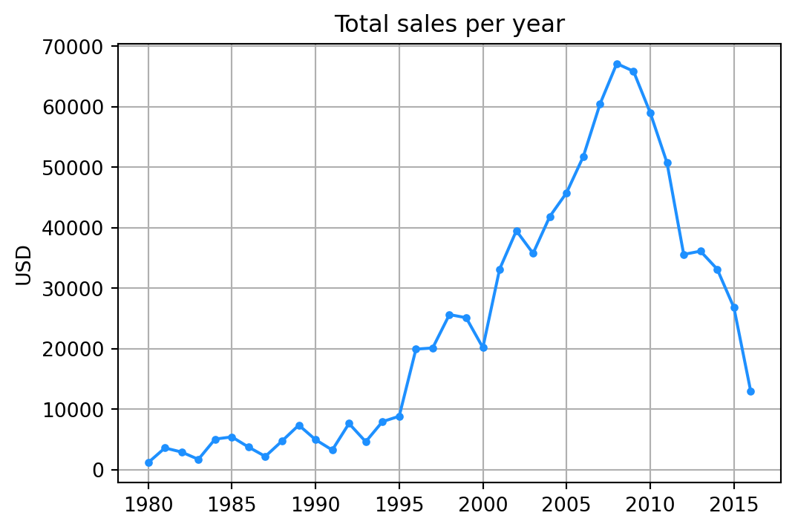
# Visualizar la evolución de cantidad de juegos
kpi_per_year.plot(
y = "games",
xlabel = "",
ylabel = "# Games",
title = "Games released per year",
figsize = [6,4],
grid = True,
marker = ".",
color = "dodgerblue",
legend = None
)
plt.show()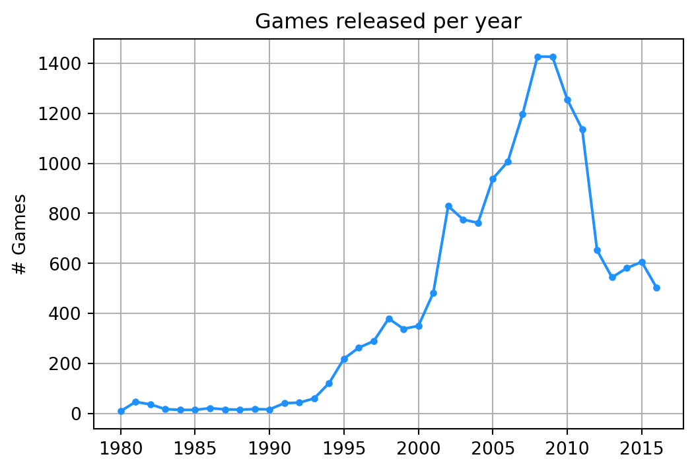
# Visualizar evolución del precio por juego
kpi_per_year.plot(
y = "price",
xlabel = "",
ylabel = "USD",
title = "Price by game per year",
figsize = [6,4],
grid = True,
marker = ".",
color = "dodgerblue",
legend = None
)
plt.show()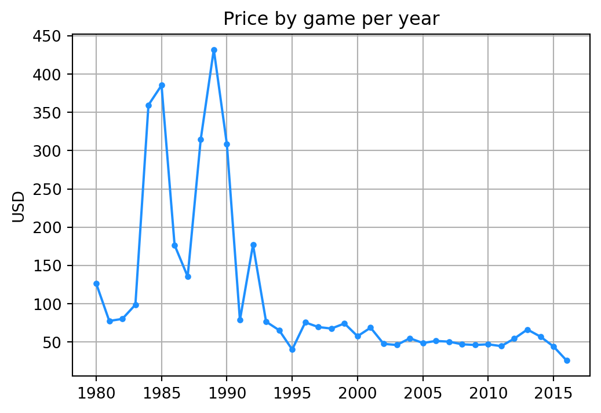
TipConclusiones
| # | Conclusión |
|---|---|
| 1 | La oferta de videojuegos tiene su “boom” a partir de 1995, cuando empieza a diversificarse la oferta de consolas (surgimiento de PlayStation y masificación de Nintendo) en los hogares y los precios de videojuegos muestran una reducción significativa. Por tanto los patrones a buscar deberían considerar información a partir de este año en cuanto el mercado habría tenido cambios significativos por lo expuesto. |
| 2 | Igualmente se evidencia un cambio de comportamiento a partir del año 2009, producto de la crisis económica mundial que acarreó probablemente nuevas dinámicas en el mercado de los videojuegos. Sin embargo, al ser información más reciente y estar asociado a factores exógenos de la economía mundial conviene mantener esta información en el dataset. |
# Eliminar información previa a 1995
df_games = df_games.query("year_of_release >= 1995")
NotaEfecto demanda y efecto precio
En un análisis comercial, siempre que sea posible conviene incorporar no solamente los valores monetarios como indicador relevante, sino también las unidades generadoras de la venta y su correspondiente ticket promedio unitario. De esta forma es factible conocer a profundidad los efectos demanda y precio que inciden en las ventas.
¿Cómo se han comportado estos indicadores en los distintos tipos de plataformas?
# Agregar información por año y tipos de plataformas
kpi_per_yp = (
df_games
.groupby(["year_of_release", "platform_group"])
.agg(
sales = ("total_sales", "sum"),
games = ("name", "count")
)
.reset_index()
)
kpi_per_yp["price"] = kpi_per_yp["sales"] / kpi_per_yp["games"]# Visualizar comportamiento de ventas por grupo de plataforma
kpi_per_yp.pivot_table(
index = "year_of_release",
columns = "platform_group",
values = "sales",
aggfunc = "sum"
).plot(
kind = "box",
xlabel = "USD",
ylabel = "",
title = "Annual sales per platform group",
vert = False,
widths = 0.7,
figsize = [6,4],
showfliers = False,
color = "dodgerblue"
)
plt.grid(axis = "x", linestyle = ":")
plt.show()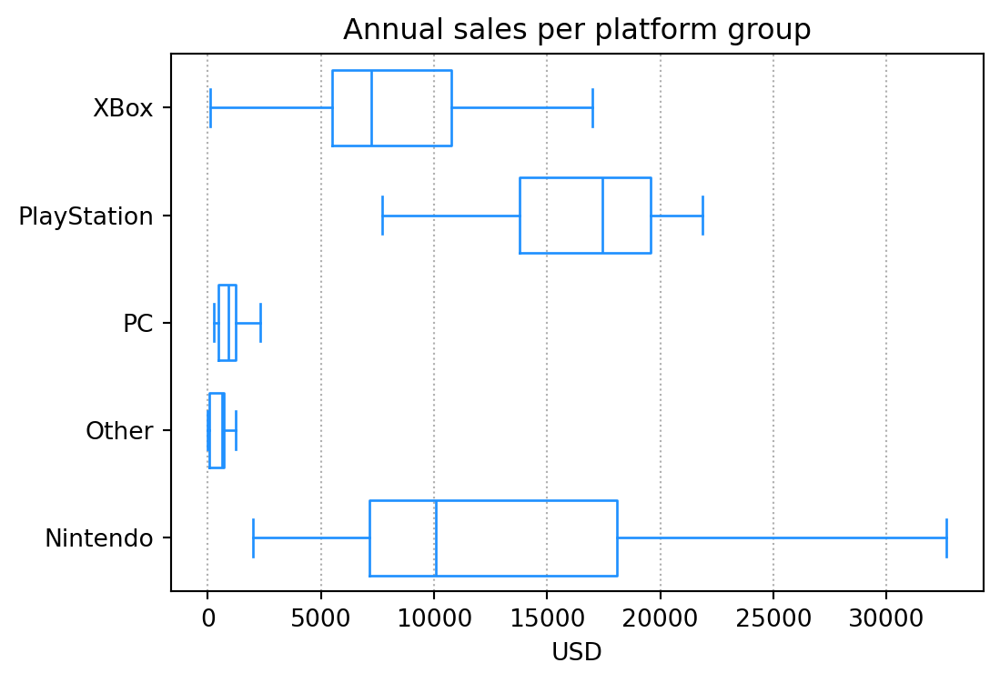
# Visualizar comportamiento de cantidad de juegos
kpi_per_yp.pivot_table(
index = "year_of_release",
columns = "platform_group",
values = "games",
aggfunc = "sum"
).plot(
kind = "box",
xlabel = "# Games",
ylabel = "",
title = "Annual released games per platform",
vert = False,
widths = 0.7,
figsize = [6,4],
showfliers = False,
color = "dodgerblue"
)
plt.grid(axis = "x", linestyle = ":")
plt.show()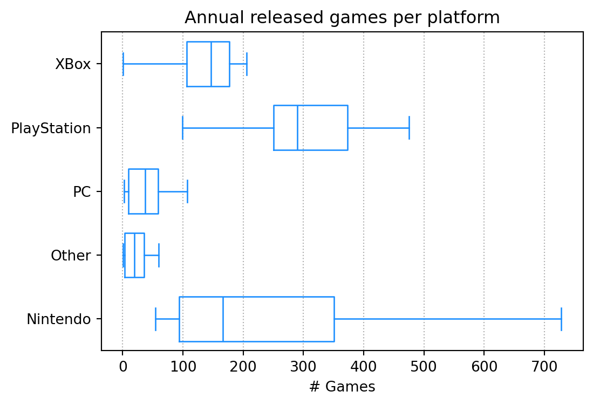
# Visualizar comportamiento de precio
kpi_per_yp.pivot_table(
index = "year_of_release",
columns = "platform_group",
values = "price",
aggfunc = "sum"
).plot(
kind = "box",
xlabel = "USD",
ylabel = "",
title = "Price per game per platform",
vert = False,
widths = 0.7,
figsize = [6,4],
showfliers = False,
color = "dodgerblue"
)
plt.grid(axis = "x", linestyle = ":")
plt.show()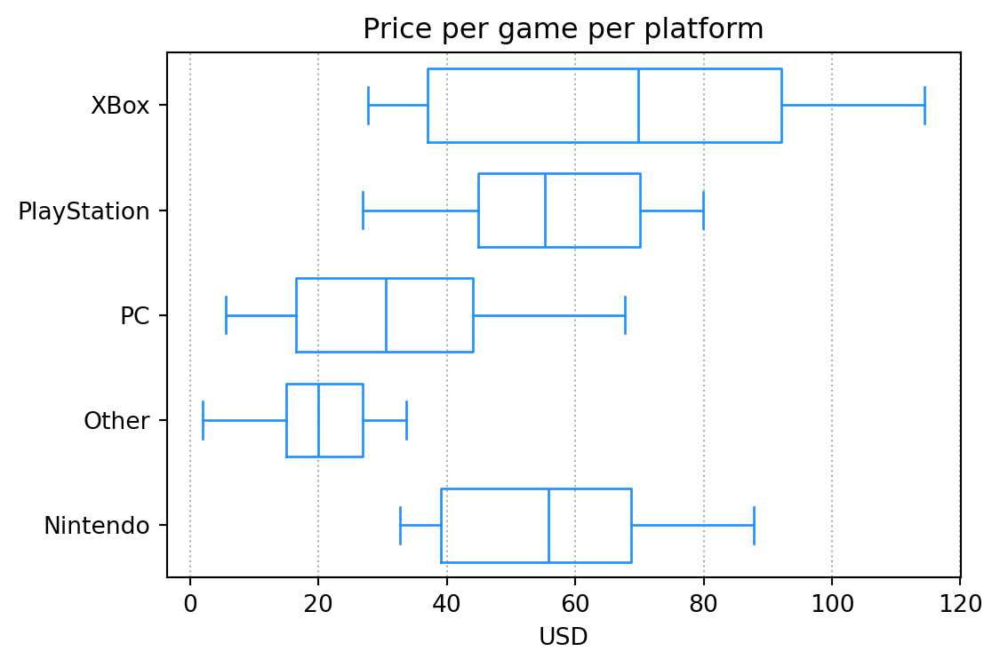
TipConclusiones
| # | Conclusión |
|---|---|
| 1 | De los resultados observados se evidencia que los grupos de plataformas relevantes para el negocio son PlayStation, Nintendo y XBox, lo anterior visto el nivel de ventas promedio por año y la cantidad ofertada de videojuegos. Por tanto, conviene quedarse únicamente con estos grupos para los análisis de patrones subsiguientes. Las estrategias de la empresa se tendrían que concentrar en estos tipos de consolas. |
# Filtrar solamente plataformas relevantes
plataformas_relevantes = ["Nintendo", "PlayStation", "XBox"]
df_games = df_games.query("platform_group == @plataformas_relevantes")¿Existen diferencias significativas en el promedio de ventas anuales entre Nintendo y PlayStation?
A continuación vamos a incorporar un análisis de inferencia denominado más formalmente como pruebas de hipótesis. A través de la estadística descriptiva podemos evaluar de manera visual el comportamiento de indicadores en variables, sin embargo dicho comportamiento suele depender de diversos factores no controlados que generan por tanto un componente aleatorio que puede alterar nuestra “percepción” como analistas y por consiguiente, nuestras conclusiones.
Para comprender mejor esta proposición, comienza extrayendo una muestra de nuestro dataset que contenga solamente la información asociada a las ventas anuales de Nintendo y PlayStation.
sales_sample = (
df_games
.query("platform_group == 'Nintendo' or platform_group == 'PlayStation'")
.pivot_table(
index = "year_of_release",
columns = "platform_group",
values = "total_sales",
aggfunc = "sum"
)
)Estudia y compara ahora la distribución de las ventas de ambos grupos de consolas.
sales_sample.describe().round(2)| platform_group | Nintendo | PlayStation |
|---|---|---|
| count | 22.00 | 22.00 |
| mean | 13413.86 | 16108.73 |
| std | 9493.16 | 4672.46 |
| min | 1992.00 | 3596.00 |
| 25% | 7124.50 | 13765.00 |
| 50% | 10100.00 | 17458.50 |
| 75% | 18097.25 | 19586.00 |
| max | 32651.00 | 21887.00 |
sales_sample.plot(
kind = "density",
figsize = [6, 4],
color = ["dodgerblue", "tomato"]
)
plt.legend(title = "")
plt.grid(linestyle = ":")
plt.show()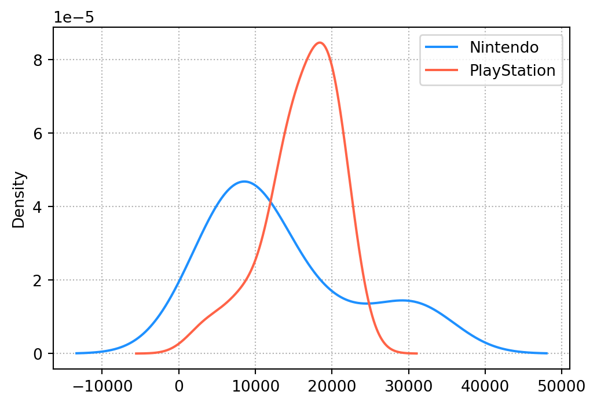
De acuerdo a este análisis descriptivo podríamos concluir que en efecto existen diferencias entre las ventas de videojuegos en los dos tipos de consolas, pues al parecer en promedio PlayStation tiene un valor mayor que Nintendo. Sin embargo, existen algunas particularidades que podrían hacernos cambiar de parecer:
- Por un lado, es evidente que las ventas de Nintendo son más dispersas, pudiendo alcanzar en algunos casos valores superiores a todos los de PlayStation.
- Adicional a esto, la diferencia en los promedios alcanzados es de aproximadamente 3,000 USD y quizás este monto no es suficientemente representativo dadas esas diferencias en la dispersión antes mencionadas.
- Finalmente, existen factores diversos y desconocidos que inciden en las ventas (p. ej., campañas de marketing), y que podrían incidir de maneras disímiles en los títulos dependiendo de la consola. Esto haría que el tipo de plataforma no sea el único efecto que explica esta diferencia.
Para sortear estas problemáticas veamos cómo podemos inferir estadísticamente una respuesta más asertiva. Para ello vamos a trabajar en dos etapas: inicialmente desarrollaremos una prueba de varianzas, cuyo resultado utilizaremos como insumo en la prueba de medias en la que validaremos definitivamente si existe o no una diferencia en las ventas promedio.
Define entonces un conjunto de hipótesis nula y alternativa respecto a la dispersión de los datos. La hipótesis nula es aquella donde no existe ninguna particularidad específica o efecto asociado al hecho de que las plataformas de videojuegos sean distintas, mientras que la alternativa correspondería al caso opuesto.
TipHipótesis nula y alternativa
| Hipótesis | Postulado |
|---|---|
| Nula | La dispersión de las ventas de Nintendo es IGUAL a la de las ventas PlayStation. |
| Alternativa | La dispersión de las ventas de Nintendo es DIFERENTE a la de las ventas PlayStation. |
Para ejecutar la inferencia asociada a estas hipótesis debemos ahora establecer el tipo de prueba a desarrollar. En Scipy se tienen las siguientes opciones de test disponibles para contraste de varianzas:
- Bartlett: Asume que los datos muestrales distribuyen de forma normal (función
st.bartlett). - Levene: Asume que los datos muestrales NO distribuyen de forma normal (función
st.levene).
Dado que no hemos realizado ninguna comprobación asociada a la distribución de los datos, y por ende no podemos concluir nada respecto a la normalidad de la distribución, ejecuta una prueba de Levene y extrae todos los resultados generados.
# Ejecutar prueba de Levene
levene_test = st.levene(sales_sample["Nintendo"], sales_sample["PlayStation"])
# Mostrar resultados alcanzados
print(f"Estadístico de prueba: {levene_test.statistic:,.1f}")
print(f"Valor p: {levene_test.pvalue:.1%}")Estadístico de prueba: 3.9
Valor p: 5.6%Toda prueba de hipótesis entrega como resultado un valor p que mide la probabilidad teórica de repetir este experimento (extraer muestras distintas de ventas de videojuegos por grupo de plataforma), y obtener resultados que ratifiquen la hipótesis nula, es decir, encontrar variabilidades iguales entre los datos.
Ante esta definición, no convendría descartar nuestra Hipótesis Nula si este valor p es significativo, digamos mayor a 10%. Por el contrario, si este valor es pequeño (menor a 10%) descartaríamos nuestra Hipótesis Nula a favor de la Alternativa. Vale indicar que al porcentaje tomado aquí como umbral se lo denomina significancia o valor alfa, y suele tomar valores de 1%, 5% o 10% usualmente.
Ejecuta por tanto esta validación y por consiguiente verifica la afirmación especificada líneas arriba. Puedes extraer el valor p mediante el atributo pvalue de la prueba realizada.
# Extraer el valor p de la prueba de Levene
p_levene = st.levene(sales_sample["Nintendo"], sales_sample["PlayStation"]).pvalue
print(f"Valor p: {p_levene:.1%}")
# Ejecutar validación
if p_levene > 0.1:
print("No se rechaza la hipótesis nula de que la variabilidad de las muestras sean iguales")
else:
print("Sí se rechaza la hipótesis nula de que la variabilidad de las muestras sean iguales")Valor p: 5.6%
Sí se rechaza la hipótesis nula de que la variabilidad de las muestras sean iguales
NotaLa prueba de Bartlett
Si deseas verificar el resultado alcanzado utilizando la prueba de Bartlett, ejecuta el siguiente código:
# Verificar si las varianzas son iguales o no con una prueba de Bartlett
p_bartlett = st.bartlett(
sales_sample["Nintendo"].astype(float),
sales_sample["PlayStation"].astype(float)
).pvalue
print(f"Valor p: {p_bartlett:.1%}")
if p_bartlett > 0.1:
print("No se rechaza la hipótesis nula de que la variabilidad de las muestras sean iguales")
else:
print("Sí se rechaza la hipótesis nula de que la variabilidad de las muestras sean iguales")Ante estos resultados se concluye que existe suficiente evidencia para afirmar que las dispersiones de las ventas de Nintendo y PlayStation son diferentes.
Pasemos ahora a la segunda parte de nuestro análisis inferencial en el que validaremos definitivamente si existe o no una diferencia en las ventas promedio de los dos grupos de plataformas. Define el conjunto de hipótesis nula y alternativa a evaluar.
TipHipótesis nula y alternativa
| Hipótesis | Postulado |
|---|---|
| Nula | El promedio de las ventas de Nintendo es IGUAL a la de las ventas PlayStation. |
| Alternativa | El promedio de las ventas de Nintendo es MENOR a la de las ventas PlayStation. |
Dado que nuestra hipótesis involucra a la media como estadístico, debemos utilizar técnicas de inferencia justamente enfocadas en el mismo. Aquí algunas opciones populares:
- Prueba Z: Asume que el estadístico (media) sigue una distribución Normal y que las varianzas poblacionales de los datos son conocidas.
- Prueba T: Asume que el estadístico sigue una distribución aproximadamente Normal y que las varianzas poblacionales de los datos son desconocidas.
- Prueba U de Mann-Whitney: No asume nada asociado a la distribución del estadístico y es especialmente útil cuando el número de observaciones es bajo.
Dado que no estamos seguros si en efecto las medias objeto de análisis siguen una distribución normal conviene realizar todas ellas. En primera instancia aplica una prueba T para validar la hipótesis planteada mediante la función st.ttest_ind de la librería Scipy. Emplea el argumento equal_var = False en vista de que del test anterior se alcanzó esta conclusión. Incorpora además el argumento alternative = "less" pues la hipótesis alternativa sugiere esta condición.
# Ejecutar prueba de hipótesis
t_test = st.ttest_ind(
sales_sample["Nintendo"], sales_sample["PlayStation"],
equal_var = False,
alternative = "less"
)
print(f"Estadístico de prueba: {t_test.statistic:,.1f}")
print(f"Valor p: {t_test.pvalue:.1%}")
# Realizar validación
if t_test.pvalue > 0.1:
print("No se rechaza la hipótesis nula de que las medias de venta anual son iguales")
else:
print("Sí se rechaza la hipótesis nula de que las medias de venta anual son iguales a favor de que la media de ventas de Nintendo es menor")Estadístico de prueba: -1.2
Valor p: 12.1%
No se rechaza la hipótesis nula de que las medias de venta anual son igualesCon el propósito de ratificar este resultado y recordando que no tenemos seguridad respecto a que las medias evaluadas sigan una distribución Normal o aproximadamente Normal, realiza una prueba U de Mann-Whitney mediante la función st.mannwhitneyu de Scipy.
# Ejecutar prueba de hipótesis
u_test = st.mannwhitneyu(
sales_sample["Nintendo"], sales_sample["PlayStation"],
alternative = "less"
)
print(f"Estadístico de prueba: {u_test.statistic:,.1f}")
print(f"Valor p: {u_test.pvalue:.1%}")
# Realizar validación
if u_test.pvalue > 0.1:
print("No se rechaza la hipótesis nula de que las medias de venta anual son iguales")
else:
print("Sí se rechaza la hipótesis nula de que las medias de venta anual son iguales a favor de que la media de ventas de Nintendo es menor")Estadístico de prueba: 159.0
Valor p: 2.6%
Sí se rechaza la hipótesis nula de que las medias de venta anual son iguales a favor de que la media de ventas de Nintendo es menorConcluye finalmente con una prueba Z mediante la función ztest. Ten cuidado con el uso del argumento alternative pues aquí la opción a seleccionar debería ser alternative = "smaller".
# Ejecutar prueba de hipótesis
z_test = ztest(
sales_sample["Nintendo"], sales_sample["PlayStation"],
alternative = "smaller"
)
print(f"Estadístico de prueba: {z_test[0]:,.1f}")
print(f"Valor p: {z_test[1]:.1%}")
# Realizar validación
if z_test[1] > 0.1:
print("No se rechaza la hipótesis nula de que las medias de venta anual son iguales")
else:
print("Sí se rechaza la hipótesis nula de que las medias de venta anual son iguales a favor de que la media de ventas de Nintendo es menor")Estadístico de prueba: -1.2
Valor p: 11.6%
No se rechaza la hipótesis nula de que las medias de venta anual son igualesEn dos de las 3 pruebas realizadas se obtiene evidencia a favor de la igualdad en el promedio de ventas anuales entre las consolas.
NotaEl estadístico de prueba
Como habrás notado las pruebas de hipótesis generan otros resultados. En especial destaca el denominado estadístico de prueba. Te recomiendo que investigues sobre qué representa este valor y cómo se vincula al valor p.
Genera las conclusiones correspondientes a este análisis inferencial.
TipConclusiones
| # | Conclusión |
|---|---|
| 1 | Nintendo y PlayStation son los principales competidores en el mercado de las consolas con ventas anuales estadísticamente iguales de conformidad con la información existente, se recomienda por tanto que el enfoque de la empresa sea en potenciar por igual estas plataformas para así abarcar la mayor demanda posible. |
| 2 | En cualquier caso, se sugiere una continua observación de los títulos de juegos que se generen para plataformas de Nintendo, dado que su mayor volatilidad daría cuenta de una menor consistencia en términos de calidad de juegos. |
Para el caso de PlayStation, ¿existe alguna relación entre los scores y las ventas de cada juego?
Empieza calculando la correlación de Pearson entre estas variables a fin de identificar la existencia de posibles relaciones lineales.
# Filtrar dataset solamente considerando PlayStation
df_playstation = df_games.query("platform_group == 'PlayStation'")
# Excluir valores ausentes
df_playstation = df_playstation.dropna()
# Calcular correlación entre variables
mat_cor = df_playstation[["total_sales", "critic_score", "user_score"]].corr(method = "pearson")
mat_cor.style.background_gradient(cmap = "Reds", axis = None)| total_sales | critic_score | user_score | |
|---|---|---|---|
| total_sales | 1.000000 | 0.396832 | 0.130736 |
| critic_score | 0.396832 | 1.000000 | 0.554338 |
| user_score | 0.130736 | 0.554338 | 1.000000 |
Al parecer existe un vínculo lineal moderado entre las ventas y el score de los críticos. Veamos si este resultado es significativo estadísticamente utilizando nuevamente inferencia. Define entonces las hipótesis nula y alternativa correspondientes.
TipHipótesis nula y alternativa
| Hipótesis | Postulado |
|---|---|
| Nula | La correlación de Pearson entre ventas y critic score es IGUAL a 0. |
| Alternativa | La correlación de Pearson entre ventas y critic score es MAYOR a 0. |
Ejecuta la prueba mediante la función st.pearsonr de Scipy para un nivel de significancia de 5%. Considera el argumento alternative = "greater" en concordancia con las hipótesis planteadas.
# Extraer valor p de la prueba
pval = st.pearsonr(
df_playstation["total_sales"],
df_playstation["critic_score"],
alternative = "greater"
).pvalue
print(f"Valor p: {pval:.1%}")
# Realizar validación
if pval > 0.05:
print("No se rechaza la hipótesis nula respecto a que la correlación entre las variables es 0.")
else:
print("Sí se rechaza la hipótesis nula respecto a que la correlación entre las variables es 0 a favor de que es positiva.")Valor p: 0.0%
Sí se rechaza la hipótesis nula respecto a que la correlación entre las variables es 0 a favor de que es positiva.Existe por tanto evidencia para afirmar que existe una proporcionalidad directa entre estas variables.
Genera una gráfica de dispersión que muestre la existencia de esta relación entre las variables. Coloca el score en el eje x, y las ventas en el eje y. Te sugiero además incorporar el argumento logy = True para una mejor visualización de los resultados.
# Visualizar la relación entre critic_score y total_sales
df_playstation.plot(
kind = "scatter",
x = "critic_score",
y = "total_sales",
logy = True,
alpha = 0.75,
xlabel = "Critic Score",
ylabel = "USD [log scale]",
title = "Critic score vs Total sales | PlayStation",
figsize = [6,4],
color = "dodgerblue"
)
plt.show()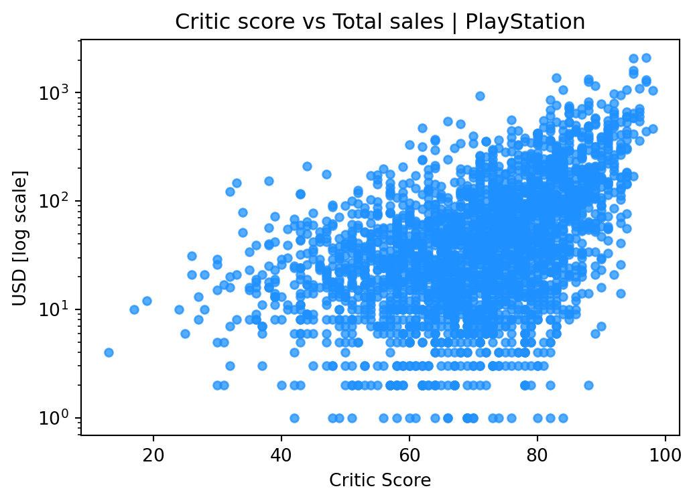
NotaEscala logarítmica
En este gráfico de dispersión hemos escalado la variable venta mediante logaritmos con el argumento logy = True. Esta práctica es muy utilizada para mejorar el entendimiento de las visualizaciones sin alterar su interpretación final. Prueba quitando este argumento o cambiando su valor a False para que observes la diferencia.
Además de esto, el uso de logaritmos para escalar variables es una práctica muy utilizada en los procesos de ingeniería de datos al momento de generar modelos y eliminar sesgos.
NotaAsociación entre variables de otro tipo
Hasta ahora has visto cómo relacionar variables numéricas mediante el método corr y las alternativas de Spearman y Pearson, pero ¿cómo se pueden obtener métricas para estimar el grado de asociación entre variables de otro tipo? Aquí te presento algunas alternativas:
- Correlación punto-biserial: Sirve para correlacionar una variable numérica con una de tipo booleano. Te sugiero conocer más sobre ella en el siguiente enlace.
- V de Cramer: Útil para correlacionar dos variables categóricas (no numéricas). En el siguiente enlace puedes consultar sobre ella.
- Eta cuadrado: Permite asociar variables categóricas con numéricas, y es la base del análisis ANOVA.
TipConclusiones
| # | Conclusión |
|---|---|
| 1 | Existe una relación positiva entre la calificación de los críticos y las ventas totales de videojuegos en PlayStation. En consecuencia, las estrategias comerciales de la empresa deberían enfocarse en monitorear estos scores para potenciar sus niveles de venta. En concreto, si se detectan juegos con una calificación alta de críticos se deberían generar campañas de marketing asociadas a estos productos. |
Para el caso de PlayStation, ¿qué géneros y ratings de videojuegos mantienen un mayor score de críticos?
# Visualizar score por género
score_genre = df_playstation.groupby("genre")["critic_score"].mean().sort_values().dropna()
score_genre.plot(
kind = "barh",
xlim = [min(score_genre) - 1, max(score_genre) + 1],
figsize = [4,6],
xlabel = "Critic Score",
ylabel = "",
title = "Critic score by genre | PlayStation",
color = "dodgerblue"
)
plt.grid(axis = "x", linestyle = ":")
plt.show()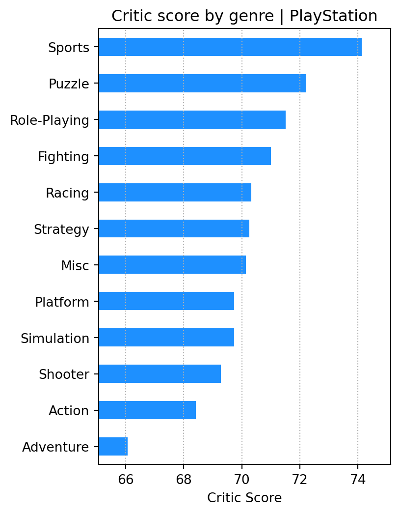
# Visualizar score por rating
score_rating = df_playstation.groupby("rating")["critic_score"].mean().sort_values().dropna()
score_rating.plot(
kind = "barh",
xlim = [min(score_rating) - 1, max(score_rating) + 1],
figsize = [4,6],
xlabel = "Critic Score",
ylabel = "",
title = "Critic Score by Rating | PlayStation",
color = "dodgerblue"
)
plt.grid(axis = "x", linestyle = ":")
plt.show()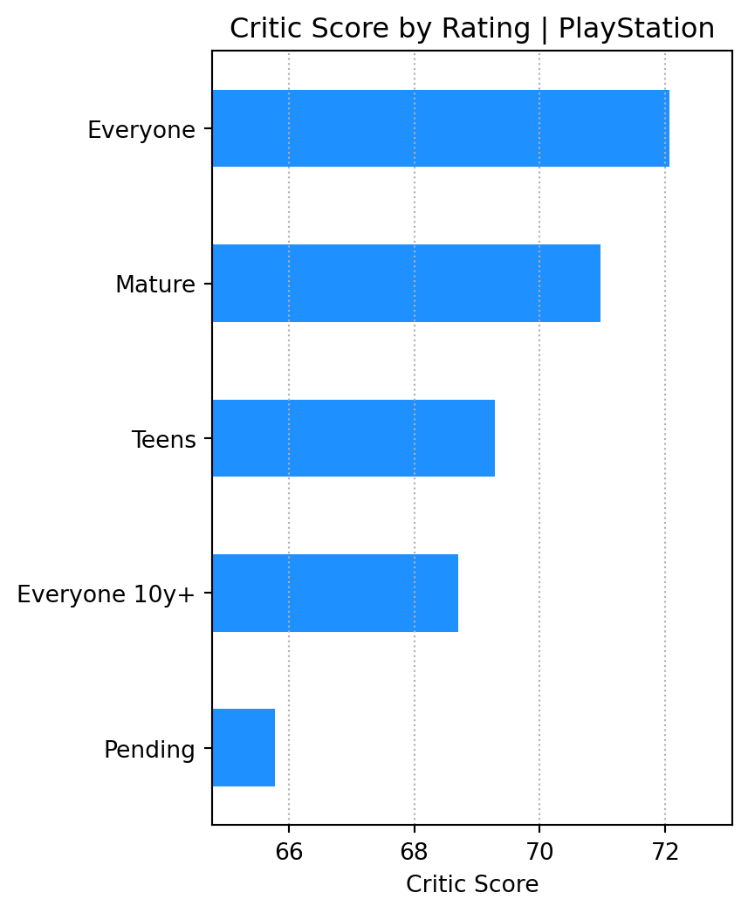
TipConclusiones
| # | Conclusión |
|---|---|
| 1 | Dentro de la estrategia sugerida en la conclusión precedente, el enfoque comercial de la empresa debería estar en promocionar orgánicamente videojuegos de las categorías de Deporte, Juegos de Rol y Peleas. Además vinculando estas categorías a grupos etarios mayores de 18 años (o que puedan acceder a contenido “Maduro”). |
¿Cómo es la preferencia de géneros de videojuegos en las distintas zonas geográficas?
# Crear tabla de participación por género
sales_genre = df_games.groupby("genre")[["na_sales", "eu_sales", "jp_sales", "other_sales"]].sum()
sales_genre_s = 100 * sales_genre / sales_genre.sum()# Visualizar share de ventas en Norteamérica
(
sales_genre_s["na_sales"]
.plot(
kind = "pie",
title = "Share of Sales | North America",
colormap = "tab20c",
autopct = "%1.0f%%",
textprops = {"fontsize": 8},
figsize = [5,5],
ylabel = ""
)
)
plt.show()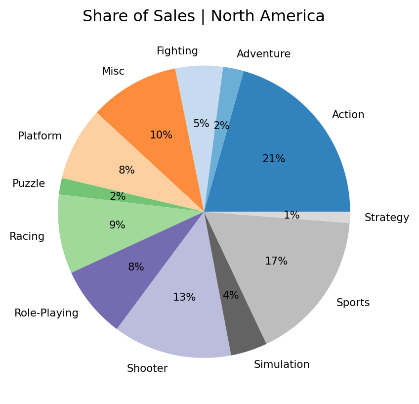
# Visualizar share de ventas en Europa
(
sales_genre_s["eu_sales"]
.plot(
kind = "pie",
title = "Share of Sales | Europe",
colormap = "tab20c",
autopct = "%1.0f%%",
textprops = {"fontsize": 8},
figsize = [5,5],
ylabel = ""
)
)
plt.show()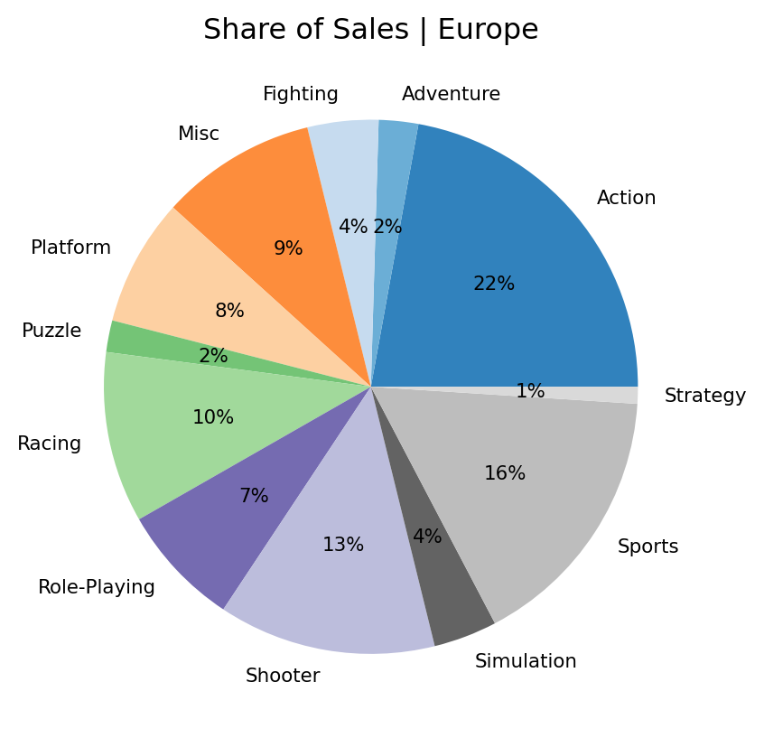
# Visualizar share de ventas en Japón
(
sales_genre_s["jp_sales"]
.plot(
kind = "pie",
title = "Share of Sales | Japan",
colormap = "tab20c",
autopct = "%1.0f%%",
textprops = {"fontsize": 8},
figsize = [5,5],
ylabel = ""
)
)
plt.show()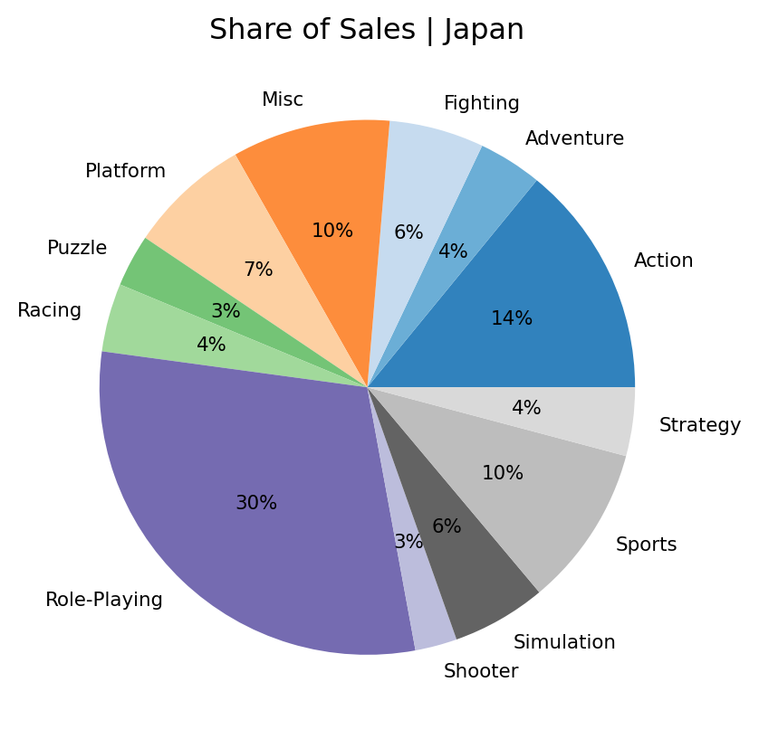
TipConclusiones
| # | Conclusión |
|---|---|
| 1 | A nivel geográfico, el mercado de Japón tiene una clara preferencia hacia videojuegos del género Rol, por tanto la estrategia comercial para la distribución en este territorio debería enfocarse en esta variedad. De forma complementaria, Norteamérica y Europa presentan gustos más heterogéneos aunque con tendencia hacia los géneros de Acción, Deportes y “Shooters”, por tanto el enfoque comercial a tomar en estos mercados debería concentrarse en estas preferencias. |
Ejercicios de práctica
En estos ejercicios prácticos profundizaremos en uno de los conceptos más importantes de la estadística inferencial y del análisis de datos aplicado a la toma de decisiones: las pruebas de hipótesis. Como recordarás, el objetivo de estas herramientas consiste en determinar si la evidencia disponible en una muestra permite respaldar o rechazar una afirmación sobre una población. Gracias a este enfoque, es posible diferenciar entre cambios que se deben simplemente al azar y cambios que probablemente son consecuencia de una acción, intervención o fenómeno específico.
Para comprender mejor su aplicación práctica, trabajaremos con un tipo de estudio ampliamente utilizado en empresas que basan sus decisiones en información: las Pruebas A/B. Estas pruebas constituyen una metodología experimental efectiva cuyo propósito es evaluar si un evento específico produce cambios medibles sobre uno o varios indicadores de interés.
La lógica detrás de las pruebas A/B es relativamente sencilla. En primera instancia se divide a una población de entidades (p. ej., clientes, productos, empleados) en dos grupos. Un grupo llamado de control o referencia, mantiene las condiciones habituales o existentes antes del experimento. Por su parte, un grupo de tratamiento o de investigación, recibe la intervención que se desea evaluar. Posteriormente, se comparan los resultados obtenidos por ambos grupos para determinar si las diferencias observadas son suficientemente significativas desde un punto de vista estadístico.
La simplicidad conceptual de las pruebas A/B no debe llevarnos a subestimar la importancia de un diseño experimental adecuado. De hecho, la calidad de las conclusiones obtenidas dependerá en gran medida de cómo se estructura y ejecuta el experimento. Un diseño deficiente puede conducir a resultados sesgados o interpretaciones incorrectas, independientemente de la sofisticación de las técnicas estadísticas utilizadas posteriormente.
En este sentido, es fundamental que exista una clara separación entre los grupos de control y tratamiento. Así también, resulta indispensable que la única diferencia relevante entre ambos grupos sea precisamente el factor que se desea evaluar. Si existen otros elementos que cambian simultáneamente durante el experimento, será difícil determinar cuál de ellos es realmente responsable de los resultados observados.
El tamaño de la muestra juega un papel determinante en la inferencia estadística, y por tanto lo hará de igual forma en una prueba A/B. Si el número de observaciones es demasiado pequeño, pueden existir diferencias reales entre los grupos que pasen desapercibidas debido a la variabilidad natural de los datos. Del mismo modo, un desequilibrio excesivo entre el tamaño de los grupos puede afectar la precisión de las estimaciones y la potencia estadística del análisis.
A lo largo de este caso práctico aprenderemos entonces cómo diseñar experimentos sencillos bajo estos criterios, y practicar nuestra formulación de hipótesis estadísticas, para posteriormente aplicar pruebas inferenciales e interpretar correctamente sus resultados. De esta manera, incorporaremos una de las herramientas más utilizadas en la actualidad para la toma de decisiones basada en evidencia.
Intenta resolver cada ejercicio por tu cuenta antes de desplegar la solución.
Entendimiento del contexto
Una empresa que ofrece servicios de call-center enfrenta una situación delicada relacionada con la gestión de su talento humano. Durante una revisión periódica de indicadores, la gerencia de operaciones detectó que uno de los agentes presenta registros que sugieren un posible incumplimiento recurrente de su jornada laboral. De acuerdo con los reportes preliminares, el tiempo efectivo de trabajo del colaborador sería inferior al esperado según las políticas internas de la organización. Como consecuencia, algunos directivos han planteado la posibilidad de proceder con su desvinculación, argumentando que este comportamiento afecta la productividad del equipo y genera una carga adicional sobre otros trabajadores.
Sin embargo, debido a los costos asociados a una terminación laboral de esta naturaleza, la dirección de la empresa ha decidido realizar una investigación más exhaustiva antes de adoptar cualquier medida. Además del impacto financiero que puede representar un despido, la organización es consciente de que una decisión incorrecta podría afectar el clima laboral y transmitir una señal negativa al resto de colaboradores. Por esta razón, se ha optado por brindar al trabajador la oportunidad de presentar sus argumentos y evidencias antes de emitir una resolución definitiva.
Durante la reunión de descargo, el operador cuestiona las conclusiones obtenidas por la gerencia y sostiene que los indicadores utilizados no reflejan adecuadamente su desempeño real. Según su versión, aunque podría registrar menos tiempo de conexión al sistema de gestión de clientes (CRM) que otros compañeros en determinados momentos, su nivel de concentración y productividad durante las horas efectivamente trabajadas es considerablemente superior. En particular, argumenta que mantiene una conexión más estable a dicho sistema, evitando interrupciones frecuentes y reduciendo tiempos improductivos que sí estarían presentes en otros miembros del equipo.
Adicionalmente, el trabajador afirma que su desempeño operativo supera al promedio de la organización. Como evidencia de ello, señala que su tasa de llamadas completadas o correctamente atendidas es superior a la observada en otros agentes, lo que le permitiría generar más valor para la empresa aun cuando sus patrones de conexión difieran de los estándares tradicionales. Desde su perspectiva, la evaluación debería centrarse en los resultados obtenidos y no únicamente en el tiempo registrado dentro de la plataforma de trabajo.
Ante la dificultad de determinar objetivamente cuál de las dos posiciones refleja con mayor precisión la realidad, el departamento de recursos humanos ha decidido recurrir al análisis de datos para respaldar su proceso de toma de decisiones. Para ello, te ha contratado con el objetivo de analizar la evidencia disponible y determinar si las diferencias observadas son estadísticamente significativas. Utilizando técnicas de inferencia estadística y pruebas A/B, deberás evaluar si el desempeño del colaborador realmente difiere del resto de operadores y si sus argumentos cuentan con suficiente respaldo cuantitativo. Los resultados de tu análisis servirán como base para que la empresa adopte una decisión justa, objetiva y sustentada en evidencia.
Entendimiento de los datos
Ejercicio 1
Importa las librerías y módulos con los que trabajarás. Además de Pandas y Matplotlib, y dado que trabajarás con técnicas de inferencia estadística, te sugiero cargar también el módulo stats de scipy, y la función proportions_ztest del módulo stats.proportion de statsmodels.
NotaSolución
import pandas as pd
import matplotlib.pyplot as plt
import scipy.stats as st
from statsmodels.stats.proportion import proportions_ztestA continuación, carga los datos que te proporciona la empresa y con los cuales desarrollarás tus análisis. Estos datos se encuentran en el archivo employee_data.xlsx. Considera para esto que el archivo cuenta con dos pestañas (Emp 1 y Emp 2), y que deberás cargar la información de cada una en dos datasets distintos.
NotaSolución
# Cargar datos de Emp 1
df_emp1 = pd.read_excel(
"https://github.com/jsaraujo5081/material_curso_data_science/raw/refs/heads/main/datasets/employee_data.xlsx",
sheet_name = "Emp 1"
)
# Mirar estructura de los datos
df_emp1.info()<class 'pandas.core.frame.DataFrame'>
RangeIndex: 50 entries, 0 to 49
Data columns (total 4 columns):
# Column Non-Null Count Dtype
--- ------ -------------- -----
0 Day 50 non-null object
1 Hour 50 non-null int64
2 Minutes Active in CRM 50 non-null int64
3 Completed Calls Rate 50 non-null float64
dtypes: float64(1), int64(2), object(1)
memory usage: 1.7+ KB# Cargar datos de Emp 2
df_emp2 = pd.read_excel(
"https://github.com/jsaraujo5081/material_curso_data_science/raw/refs/heads/main/datasets/employee_data.xlsx",
sheet_name = "Emp 2"
)
# Mirar estructura de los datos
df_emp2.info()<class 'pandas.core.frame.DataFrame'>
RangeIndex: 50 entries, 0 to 49
Data columns (total 4 columns):
# Column Non-Null Count Dtype
--- ------ -------------- -----
0 Day 50 non-null object
1 Hour 50 non-null int64
2 Minutes Active in CRM 50 non-null int64
3 Completed Calls Rate 50 non-null float64
dtypes: float64(1), int64(2), object(1)
memory usage: 1.7+ KBEjercicio 2
La tabla en la pestaña Emp 1 corresponde a información de la última semana del empleado investigado respecto a lo siguiente:
| Columna | Descripción |
|---|---|
| Day | Día de la semana en la que se tomaron los datos. |
| Hour | Hora del día en la que se tomaron los datos. |
| Minutes Active in CRM | Minutos totales en dicha hora y día en los que el sistema reflejó actividad por parte del empleado. |
| Completed Calls Rate | Porcentaje de llamadas debidamente completadas por parte del empleado respecto al total que atendió durante esa hora y día. |
Explora este dataset generando una muestra del mismo, y mostrando un resumen estadístico de los indicadores existentes.
NotaSolución
# Generar muestra de datos
df_emp1.sample(10, random_state = 123)| Day | Hour | Minutes Active in CRM | Completed Calls Rate | |
|---|---|---|---|---|
| 10 | Tuesday | 8 | 33 | 0.695012 |
| 13 | Tuesday | 11 | 37 | 0.800000 |
| 30 | Thursday | 8 | 22 | 0.890000 |
| 46 | Friday | 14 | 16 | 0.420239 |
| 18 | Tuesday | 16 | 31 | 0.810000 |
| 0 | Monday | 8 | 22 | 0.315165 |
| 40 | Friday | 8 | 32 | 0.830000 |
| 12 | Tuesday | 10 | 34 | 0.658635 |
| 29 | Wednesday | 17 | 32 | 0.284858 |
| 8 | Monday | 16 | 31 | 0.860000 |
# Visualizar distribución de minutos y tasa de completitud
df_emp1[["Minutes Active in CRM", "Completed Calls Rate"]].describe().round(2)| Minutes Active in CRM | Completed Calls Rate | |
|---|---|---|
| count | 50.00 | 50.00 |
| mean | 26.90 | 0.71 |
| std | 8.90 | 0.19 |
| min | 0.00 | 0.19 |
| 25% | 22.25 | 0.65 |
| 50% | 28.50 | 0.80 |
| 75% | 33.00 | 0.83 |
| max | 40.00 | 0.90 |
Por su parte, la tabla en la pestaña Emp 2 contiene las mismas columnas y presenta información promedio del equipo de operadores del call-center para la última semana.
Explora esta información generando los mismos resultados que antes.
NotaSolución
# Generar muestra de datos
df_emp2.sample(10, random_state = 123)| Day | Hour | Minutes Active in CRM | Completed Calls Rate | |
|---|---|---|---|---|
| 10 | Tuesday | 8 | 52 | 0.704547 |
| 13 | Tuesday | 11 | 55 | 0.336447 |
| 30 | Thursday | 8 | 43 | 0.230971 |
| 46 | Friday | 14 | 23 | 0.196935 |
| 18 | Tuesday | 16 | 55 | 0.359811 |
| 0 | Monday | 8 | 36 | 0.720000 |
| 40 | Friday | 8 | 50 | 0.428802 |
| 12 | Tuesday | 10 | 46 | 0.710000 |
| 29 | Wednesday | 17 | 48 | 0.018528 |
| 8 | Monday | 16 | 54 | 0.469310 |
# Visualizar distribución de minutos y tasa de completitud
df_emp2[["Minutes Active in CRM", "Completed Calls Rate"]].describe().round(2)| Minutes Active in CRM | Completed Calls Rate | |
|---|---|---|
| count | 50.00 | 50.00 |
| mean | 36.52 | 0.52 |
| std | 11.36 | 0.24 |
| min | 10.00 | 0.02 |
| 25% | 30.00 | 0.34 |
| 50% | 37.00 | 0.47 |
| 75% | 44.75 | 0.73 |
| max | 55.00 | 0.85 |
Preparación de datos
Ejercicio 1
A continuación podrás evidenciar el siguiente plan de acción para preparar los datos adecuadamente a fin de ejecutar los análisis posteriores:
TipPlan de acción para preparación de datos
| Problema detectado | Acción planificada |
|---|---|
| No está detallado en ningún dataset el tipo de información a la que corresponde. | Incorporar en cada dataset una columna que identifique al empleado que corresponda. |
| La información se encuentra en dos tablas distintas. | Concatenar los datasets para tener una sola fuente de información con la que ejecutar los análisis posteriores. |
| Los nombres de las columnas presentan un formato no óptimo para el análisis. | Cambiar los nombres de la tabla para que se encuentre en formato snake_case. |
| Los días están presentados como texto y esto puede dificultar algunos análisis. | Incorporar una columna con el día de la semana en formato numérico. |
Ejecuta la primera de estas acciones, esto es, incorpora una nueva columna en cada dataset identificando al empleado que corresponde.
NotaSolución
df_emp1["employee"] = "investigated"
df_emp2["employee"] = "reference"
df_emp1.info()
print()
df_emp2.info()<class 'pandas.core.frame.DataFrame'>
RangeIndex: 50 entries, 0 to 49
Data columns (total 5 columns):
# Column Non-Null Count Dtype
--- ------ -------------- -----
0 Day 50 non-null object
1 Hour 50 non-null int64
2 Minutes Active in CRM 50 non-null int64
3 Completed Calls Rate 50 non-null float64
4 employee 50 non-null object
dtypes: float64(1), int64(2), object(2)
memory usage: 2.1+ KB
<class 'pandas.core.frame.DataFrame'>
RangeIndex: 50 entries, 0 to 49
Data columns (total 5 columns):
# Column Non-Null Count Dtype
--- ------ -------------- -----
0 Day 50 non-null object
1 Hour 50 non-null int64
2 Minutes Active in CRM 50 non-null int64
3 Completed Calls Rate 50 non-null float64
4 employee 50 non-null object
dtypes: float64(1), int64(2), object(2)
memory usage: 2.1+ KBA continuación concatena los dos datasets.
NotaSolución
df_consolidado = pd.concat(
[df_emp1, df_emp2]
)
df_consolidado.info()<class 'pandas.core.frame.DataFrame'>
Index: 100 entries, 0 to 49
Data columns (total 5 columns):
# Column Non-Null Count Dtype
--- ------ -------------- -----
0 Day 100 non-null object
1 Hour 100 non-null int64
2 Minutes Active in CRM 100 non-null int64
3 Completed Calls Rate 100 non-null float64
4 employee 100 non-null object
dtypes: float64(1), int64(2), object(2)
memory usage: 4.7+ KBEjercicio 2
Cambia los nombres de las columnas para que estén en formato snake_case.
NotaSolución
df_consolidado.columns = [x.lower().replace(" ", "_") for x in df_consolidado.columns]
df_consolidado.info()<class 'pandas.core.frame.DataFrame'>
Index: 100 entries, 0 to 49
Data columns (total 5 columns):
# Column Non-Null Count Dtype
--- ------ -------------- -----
0 day 100 non-null object
1 hour 100 non-null int64
2 minutes_active_in_crm 100 non-null int64
3 completed_calls_rate 100 non-null float64
4 employee 100 non-null object
dtypes: float64(1), int64(2), object(2)
memory usage: 4.7+ KBFinalmente, incorpora una columna auxiliar que contenga los días de la semana a modo de número. Es decir, los días lunes deben mostrar el valor de 1 en esta columna, los martes 2, y así en adelante.
NotaSolución
dic_days = {
"Monday": 1,
"Tuesday": 2,
"Wednesday": 3,
"Thursday": 4,
"Friday": 5
}
df_consolidado["nday"] = df_consolidado["day"].map(dic_days)
df_consolidado.info()<class 'pandas.core.frame.DataFrame'>
Index: 100 entries, 0 to 49
Data columns (total 6 columns):
# Column Non-Null Count Dtype
--- ------ -------------- -----
0 day 100 non-null object
1 hour 100 non-null int64
2 minutes_active_in_crm 100 non-null int64
3 completed_calls_rate 100 non-null float64
4 employee 100 non-null object
5 nday 100 non-null int64
dtypes: float64(1), int64(3), object(2)
memory usage: 5.5+ KBAnálisis exploratorio de datos
Ejercicio 1
Procedamos estudiando en mayor detalle el comportamiento de los indicadores de interés. Dado que por el contexto nos interesa estudiar la centralidad y la dispersión de los minutos activos de los empleados, muestra la media y la desviación estándar de la variable tanto para el empleado investigado como para el caso referencial.
NotaSolución
(
df_consolidado
.groupby("employee")
["minutes_active_in_crm"]
.describe()
.transpose()
.loc[["mean", "std"]]
.round(2)
)| employee | investigated | reference |
|---|---|---|
| mean | 26.9 | 36.52 |
| std | 8.9 | 11.36 |
Para mirar en más detalle esta información, compara las distribuciones de minutos mediante gráficas de cajón con bigote.
NotaSolución
# Generar dataset agregado de minutos
mins_by_employee = df_consolidado.pivot_table(
index = ["nday", "day", "hour"],
columns = "employee",
values = "minutes_active_in_crm",
aggfunc = "sum"
).reset_index()
# Comparar distribuciones de minutos con gráfica de cajón
fig = mins_by_employee[["investigated", "reference"]].plot(
kind = "box",
vert = False,
widths = 0.5,
figsize = [6,4],
xlim = [0,60],
title = "Minutes distribution by employee",
color = "black",
patch_artist = True,
return_type = "dict"
)
colors = ["tomato", "dodgerblue"]
for patch, color in zip(fig["boxes"], colors):
patch.set_facecolor(color)
patch.set_alpha(0.75)
plt.grid(axis = "x", linestyle = ":")
plt.show()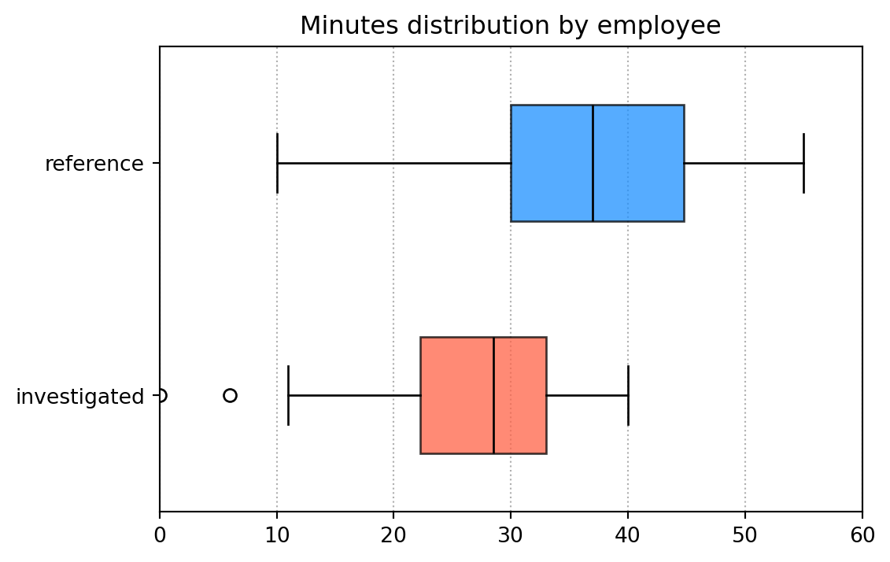
Complementa esta comparación con gráficas de densidad.
NotaSolución
mins_by_employee[["investigated", "reference"]].plot(
kind = "density",
color = ["tomato", "dodgerblue"],
alpha = 0.75,
figsize = [6,4],
xlim = [0,60],
title = "Minutes distribution by employee"
)
plt.legend(title = "")
plt.grid(linestyle = ":")
plt.show()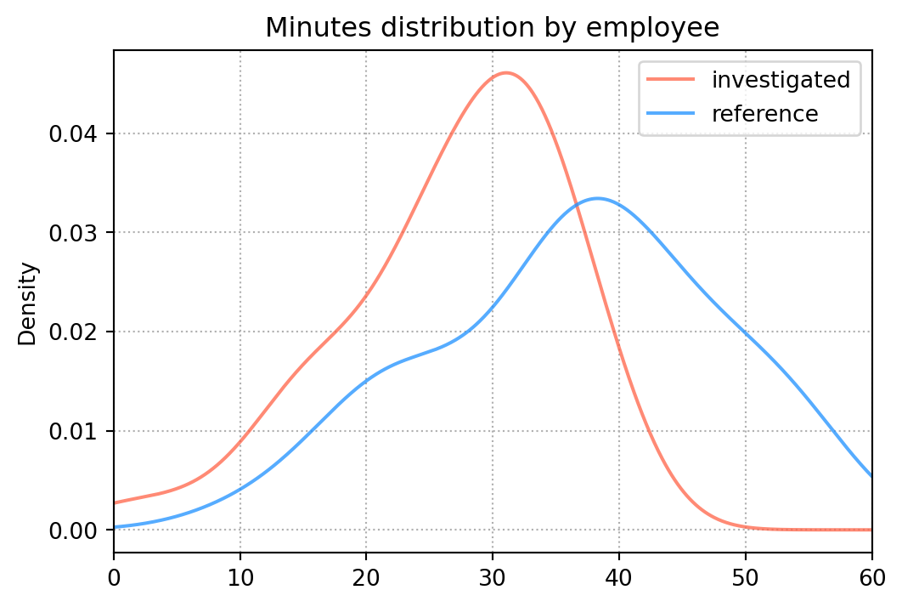
En vista de que esta información se encuentra distribuida a través del tiempo, igualmente haz una comparación de los minutos de actividad por grupo de empleado mediante una evolución durante la semana de análisis.
NotaSolución
plt.figure(figsize = [10, 4])
plt.plot(
mins_by_employee["investigated"],
color = "tomato",
alpha = 0.75
)
plt.plot(
mins_by_employee["reference"],
color = "dodgerblue",
alpha = 0.75
)
plt.legend(["investigated", "reference"])
plt.title("Minutes evolution by employee")
plt.xticks(
ticks = range(0, len(mins_by_employee), 10),
labels = ["Monday", "Tuesday", "Wednesday", "Thursday", "Friday"]
)
plt.ylim([0,60])
plt.grid(linestyle = ":")
plt.show()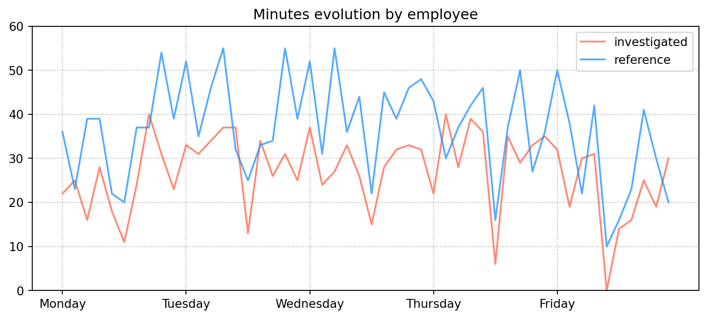
En base a estos resultados, existirían indicios de que en efecto el empleado investigado tiene menor tiempo de trabajo que los demás, aunque su tiempo de trabajo sería más estable (menos volátil).
Ejercicio 2
Procedamos ahora a estudiar el indicador de tasa de completitud de llamadas. Al igual que antes extrae el promedio y la desviación estándar de este indicador por grupo de empleado.
NotaSolución
(
df_consolidado
.groupby("employee")
["completed_calls_rate"]
.describe()
.transpose()
.loc[["mean", "std"]]
.round(2)
)| employee | investigated | reference |
|---|---|---|
| mean | 0.71 | 0.52 |
| std | 0.19 | 0.24 |
Procede con una comparativa visual de la distribución de estas variables a través de cajones con bigotes.
NotaSolución
# Generar dataset agregado de tasa de llamadas completadas
rate_by_employee = df_consolidado.pivot_table(
index = ["nday", "day", "hour"],
columns = "employee",
values = "completed_calls_rate",
aggfunc = "mean"
).reset_index()
# Comparar distribuciones de la tasa con gráfica de cajón
fig = rate_by_employee[["investigated", "reference"]].plot(
kind = "box",
vert = False,
widths = 0.5,
figsize = [6,4],
xlim = [0,1],
title = "Rate distribution by employee",
color = "black",
patch_artist = True,
return_type = "dict"
)
colors = ["tomato", "dodgerblue"]
for patch, color in zip(fig["boxes"], colors):
patch.set_facecolor(color)
patch.set_alpha(0.75)
plt.grid(axis = "x", linestyle = ":")
plt.show()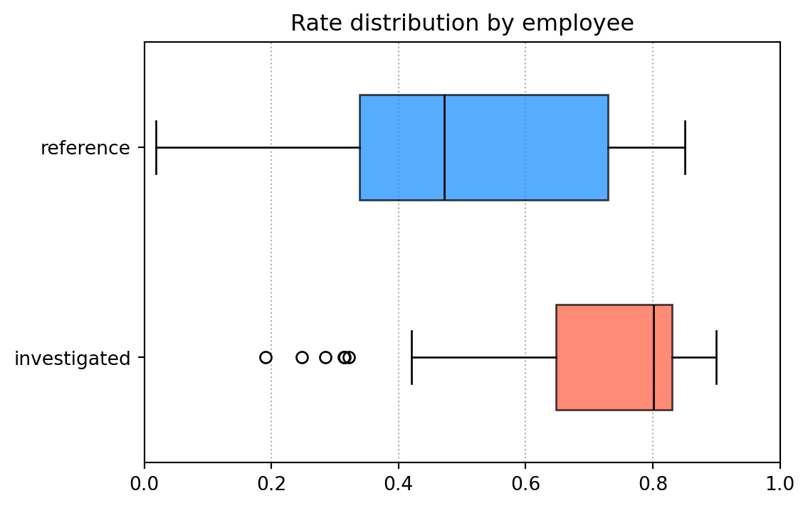
Complementa tu análisis comparativo con unas gráficas de densidad.
NotaSolución
rate_by_employee[["investigated", "reference"]].plot(
kind = "density",
color = ["tomato", "dodgerblue"],
alpha = 0.75,
figsize = [6,4],
xlim = [0,1],
title = "Rate distribution by employee"
)
plt.legend(title = "")
plt.grid(linestyle = ":")
plt.show()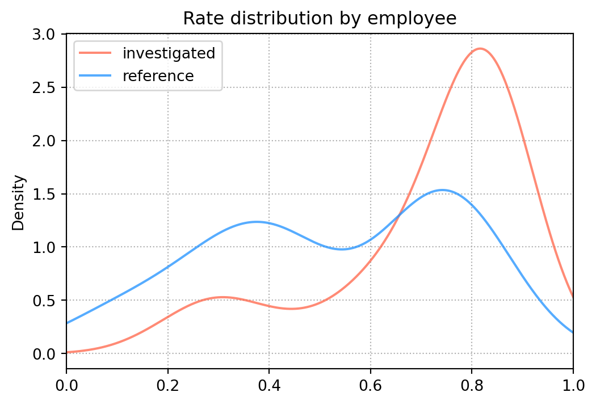
Mira finalmente la evolución durante la semana del indicador.
NotaSolución
plt.figure(figsize = [10, 4])
plt.plot(
rate_by_employee["investigated"],
color = "tomato",
alpha = 0.75
)
plt.plot(
rate_by_employee["reference"],
color = "dodgerblue",
alpha = 0.75
)
plt.legend(["investigated", "reference"])
plt.title("Complete calls rate evolution by employee")
plt.xticks(
ticks = range(0, len(rate_by_employee), 10),
labels = ["Monday", "Tuesday", "Wednesday", "Thursday", "Friday"]
)
plt.ylim([0,1])
plt.grid(linestyle = ":")
plt.show()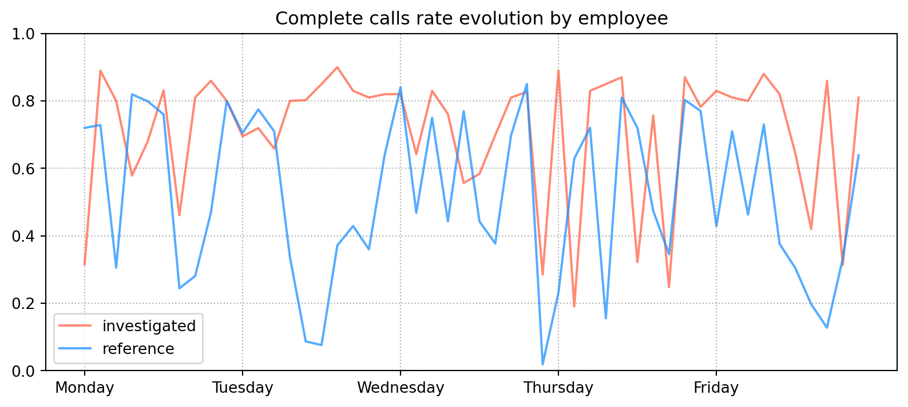
Estos resultados evidenciarían que el operador investigado en efecto tiene mejor rendimiento en cuanto a completitud de llamadas. Sin embargo, al tener solamente información de la última semana necesitamos aplicar métodos de inferencia para poder generalizar estas conclusiones.
Prueba A/B
Ejercicio 1
Comencemos estudiando la variabilidad de los minutos activos en el CRM. Si recuerdas, el colaborador investigado afirmaba que su tiempo de trabajo, si bien podía ser menor al del resto de compañeros, era más estable y homogéneo. Para verificar si tiene razón, inicia planteando una hipótesis nula y una alternativa acorde.
TipSolución
| Hipótesis | Postulado |
|---|---|
| Nula | El empleado investigado tiene IGUAL variabilidad en sus minutos activos que el empleado de referencia. |
| Alternativa | El empleado investigado tiene MENOR variabilidad en sus minutos activos que el empleado de referencia. |
Extrae las correspondientes muestras de minutos activos para los dos grupos de empleados.
NotaSolución
sample_inv = mins_by_employee["investigated"]
sample_ref = mins_by_employee["reference"]sample_ref.std()np.float64(11.364534880989387)Dado que del análisis exploratorio se desprende que existe cierta forma normal en la distribución de estas muestras, utiliza un test de Bartlett para extraer el valor p asociado. Considera que este estadístico debe ajustarse al estar realizando un test de “una cola” y no contar con el argumento alternative. Para ello, divide el valor p por 2.
NotaSolución
# Extraer valor p de prueba de Bartlett
# (astype(float) evita un error de algunas versiones recientes de Scipy con datos enteros)
p_value = st.bartlett(sample_inv.astype(float), sample_ref.astype(float)).pvalue
# Ajustar valor p para prueba de 1 cola
p_value_1t = p_value / 2
print(f"Valor p: {p_value_1t:.1%}")Valor p: 4.5%Aplica el criterio de decisión de inferencia estadística con un nivel de significancia del 5%.
NotaSolución
if p_value_1t > 0.05:
print("Empleado investigado tendría IGUAL volatilidad de minutos que la referencia.")
else:
print("Empleado investigado tendría MENOR volatilidad de minutos que la referencia.")Empleado investigado tendría MENOR volatilidad de minutos que la referencia.Mediante la lógica estadística de esta prueba A/B, se podría ratificar lo argumentado por el empleado respecto a que su tiempo de actividad es más estable.
NotaValor p ajustado en pruebas de una cola
En el caso de que estuviéramos evaluando como alternativa que la variabilidad de un caso sea MAYOR al del otro, el valor p ajustado debería ser:
\[ p_{ajustado} = 1 - \frac{p}{2} \]
Ejercicio 2
Procedamos ahora a evaluar si este tiempo es menor en promedio al del resto de operadores de la empresa. Plantea las hipótesis nula y alternativa correspondientes.
TipSolución
| Hipótesis | Postulado |
|---|---|
| Nula | El empleado investigado tiene IGUAL promedio de minutos activos que el empleado de referencia. |
| Alternativa | El empleado investigado tiene MENOR promedio de minutos activos que el empleado de referencia. |
Mediante un test t, obtén el valor p asociado. Considera que del ejercicio anterior se ha verificado que la variabilidad entre los grupos no es igual.
NotaSolución
p_value = st.ttest_ind(
sample_inv,
sample_ref,
alternative = "less",
equal_var = False
).pvalue
print(f"Valor p: {p_value:.1%}")Valor p: 0.0%Aplica el criterio de decisión de inferencia estadística con un nivel de significancia del 5%.
NotaSolución
if p_value > 0.05:
print("Empleado investigado tendría IGUAL promedio de minutos que la referencia.")
else:
print("Empleado investigado tendría MENOR promedio de minutos que la referencia.")Empleado investigado tendría MENOR promedio de minutos que la referencia.Mediante la lógica estadística de esta prueba A/B, se podría ratificar lo argumentado por la gerencia respecto a que el tiempo de actividad del empleado es menor que el de otros colaboradores.
Ejercicio 3
Queda finalmente verificar si el indicador de completitud de llamadas es mayor para el caso de la persona investigada. Plantea las hipótesis nula y alternativa.
TipSolución
| Hipótesis | Postulado |
|---|---|
| Nula | El empleado investigado tiene IGUAL tasa de llamadas completadas que el empleado de referencia. |
| Alternativa | El empleado investigado tiene MAYOR tasa de llamadas completadas que el empleado de referencia. |
Extrae las muestras de datos correspondientes para esta prueba.
NotaSolución
sample_inv = rate_by_employee["investigated"]
sample_ref = rate_by_employee["reference"]Dado que el indicador corresponde a un porcentaje, conviene realizar un test z de proporciones. Entonces genera una lista que contenga dos valores:
- El primero corresponde a la estimación de llamadas completadas que tendrá el empleado investigado de un total de 100 ejecutadas.
- El segundo corresponde a la estimación de llamadas completadas que tendrá el resto de operadores de un total de 100 ejecutadas.
NotaSolución
mean_inv = sample_inv.mean()
mean_ref = sample_ref.mean()
success = [int(100 * mean_inv), int(100 * mean_ref)]
print(success)[71, 52]Utiliza esta lista para realizar la prueba y extraer el valor p asociado. Incorpora por tanto la lista como argumento de la función proportions_ztest.
NotaSolución
# Obtener valor p
p_value = proportions_ztest(
count = success,
nobs = [100, 100],
alternative = "larger"
)[1]
print(f"Valor p: {p_value:.1%}")Valor p: 0.3%Aplica el criterio de decisión de inferencia estadística con un nivel de significancia del 5%.
NotaSolución
# Aplicar criterio de decisión
if p_value > 0.05:
print("Empleado investigado tendría IGUAL tasa de llamadas completadas que la referencia.")
else:
print("Empleado investigado tendría MAYOR tasa de llamadas completadas que la referencia.")Empleado investigado tendría MAYOR tasa de llamadas completadas que la referencia.Mediante la lógica estadística de esta prueba A/B, se podría ratificar lo argumentado por el empleado que su rendimiento en cuanto a tasa de llamadas completadas es mayor.
Ejercicio 4
Genera una conclusión adecuada a brindar a la empresa y que le permita tomar una decisión justa y adecuada en este caso.
TipSolución
| # | Conclusión |
|---|---|
| 1 | Si bien el empleado investigado trabaja menos tiempo que los demás miembros del equipo, durante este tiempo su trabajo es más estable y con mejores resultados en cuanto a llamadas completadas. Por lo expuesto, se recomienda no proceder con la solicitud de desvinculación dado que la persona se ha mostrado como alguien eficiente y beneficioso para la organización. |